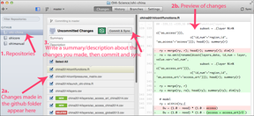
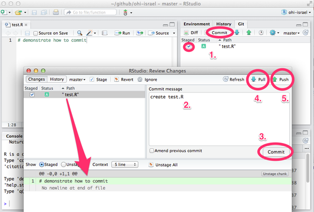

The Ocean Health Index Assessment Manual
- 1 Introduction
- 2 Introduction to OHI Assessments
- 3 Overview of the OHI Toolbox <
> - 4 Conducting an Assessment
- 4.1 What to expect when conducting an assessment
- 4.2 Where to start
- 4.3 Points to remember
- 4.4 Checklist: How to prepare for using the Toolbox
- 4.5 Discovering and Gathering Appropriate Data and Indicators
- 4.6 Pressures and resilience
- 4.6.1 Matrices
- 4.6.2 Explore local pressures
- 4.6.3 Updating the pressures matrix
- 4.6.4 Some spatial considerations
- 4.6.5 Determine how the pressure affects goals
- 4.6.6 Identify available pressures data
- 4.6.7 Explore local resilience
- 4.6.8 Identify regulatory resilience measures for any new ecological pressures
- 4.6.9 Determine how the resilience measure affects goals
- 4.6.10 Identify available resilience data
- 5 The Ocean Health Index Toolbox
- 6 Installing the Toolbox
- 6.1 Overview
- 6.2 GitHub
- 6.3 Accessing GitHub Repositories
- 6.3.1 Create a GitHub account
- 6.3.2 Install git software
- 6.3.3 Set up your Git Identity
- 6.3.4 Install the GitHub application
- 6.3.5 Create a folder called github on your computer
- 6.3.6 Clone your repository to your computer
- 6.3.7 Update permissions
- 6.3.8 Work locally
- 6.3.9 Syncing
- 6.3.10 Using the GitHub App to synchronize your repository
- 6.3.11 Working with R and RStudio
- 6.3.12 Using RStudio to synchronize your repository
- 6.3.13 Install the latest version of R and RStudio
- 6.4 GitHub repository architecture
- 7 Using the Toolbox
- 8 Frequently Asked Questions (FAQs)
- 9 Toolbox Troubleshooting
1 Introduction
1.1 The Ocean Health Index
The Ocean Health Index (OHI) project was created with a strong foundation in communication and collaboration. Following the initial publication by Halpern et al. 2012 in Nature, we have conducted global assessments annually (in 2013, 2014, and ongoing), and have conducted smaller-scale assessments for the U.S. West Coast (Halpern et al. 2014), Fiji (Selig et al. in press), and Brazil (Elfes et al. 2014).
We have also developed the OHI Toolbox and WebApps to enable any group to conduct independent assessments using the OHI framework and modifying it to their needs. The Toolbox enables the OHI framework to be customized to any area of interest, incorporating whatever goals, data, indicators, and priorities regarding ocean-derived benefits that are relevant and available to the chosen spatial scale. Information is presented through the WebApps, which are used for orientation, visualization, and reporting.
This manual provides information for:
- Planning an assessment
- Navigating the OHI WebApp to visualize data at global and regional scales
- Modifying data and models within the Toolbox for an independent assessment
- Guidance for frequently asked questions and troubleshooting
2 Introduction to OHI Assessments
Section Summary:
This section provides an overview of conducting an OHI assessment. In each assessment, goals are scored from 0 to 100 and then aggregated to produce an overall Index score. An assessment requires data, indicators, and priorities that are appropriate for each context.
TIP: The process of conducting an OHI assessment is as valuable as the results for policy and management decisions.
Assessments using the OHI framework can be most relevant to policy and management decisions when they are conducted at smaller spatial scales (e.g., countries, states, provinces, ecoregions, bays, etc.). Using ten criteria (called goals), the Index scores on a scale of 0 to 100 how well coastal regions optimize their potential ocean benefits and services in a sustainable way relative to self-established reference points (targets). Relevant goal models are developed based on the best available information, which can be either raw data or composite data, or previously developed indicators.
The process of conducting an OHI assessment is as valuable as the final results. This is because while conducting an OHI assessment you will identify gaps in knowledge and data, produce decision-relevant information, and create an ocean alliance that combines knowledge and cultural values across disciplines. Conducting an OHI assessment requires engagement from as many different groups as possible, including research institutions, government agencies, policy groups, non-governmental organizations, and the civil and private sectors.
Assessments can incorporate higher-resolution data and indicators, local priorities and preferences, and develop tailored goal models and reference points, which produce scores that better reflect local realities. If a goal is not relevant in the local context, it can be excluded entirely. Similarly, pressures and resilience measures can be refined using local data and indicators. Index scores are only as good as the data on which they are based. Finding the best data and indicators available is crucial for obtaining meaningful findings that can help inform decision-making.
OHI assessments most often involve several regions within an overall study area. For example, in the global assessment, there were 221 regions (nations and territories) within the study area (global coastal oceans).
Goal scores are calculated for each region separately and then combined to produce an overall Index score for the region. Index scores are combined using an area-weighted average to produce the Index score for the overall study area.
3 Overview of the OHI Toolbox <>
Section Summary:
In this section, you will learn how to access and use the OHI WebApps. Once using the WebApp, you can conduct a preliminary assessment and use the built-in functions to compare input layers, output scores, and change data display options.
3.1 Background
OHI WebApps are websites created to facilitate independent assessments, and one is available for nearly every coastal nation or territory. The WebApps are meant to be a ‘Starter Kit’ and are available through http://ohi-science.org using a three-letter identifier in the URL. For example, Ecuador’s WebApp (“ECU”) is found at http://ohi-science.org/ecu. Each WebApp displays data layers*, which are raw data in this case, as well as the calculated OHI scores based on information extracted from global assessments. As such, they do not provide fine-scale resolution of data for each coastal nation or territory: the scores and data on which they are based are a starting point for an assessment to be conducted by an independent group. These data can be used as a default if better data for the region do not exist, but we encourage you to replace them wherever possible. (*Note: each data component that is included in the OHI is called a data layer because it will be combined with others to calculate the goal scores. Many data layers are rescaled from 0-1 to be combined with other data layers on the same unitless scale.)
Boundaries for exclusive economic zones (EEZs) were identified by www.marineregions.org and the largest subcountry regions (i.e., provinces, states, districts) were identified by http://gadm.org. Subcountry region boundaries were extended offshore to divide the EEZ of each study area into offshore regions. These subcountry regions have been provided as a starting point, and are typically coastal states or provinces, which, in our experience, is consistent with the scale at which most policy decisions are made. However, it is possible to change the boundaries for the regions and the study area depending on your preferences.
OHI WebApps serve several purposes because they:
- allow for exploration of how the Index works: what data look like and which data layers are used in each goal
- are a communication platform for an assessment team, since information is presented in a manner that is accessible to group members of different disciplines and technical capacities
- can be used to set data gathering or goal model development priorities for the assessment
- display your assessment’s data and calculated scores once you have finalized and formatted your data and modified goal models.
The information displayed on the website is stored online, in a GitHub repository. GitHub is an open-source development platform allows for multiple users to collaborate, track changes, and document work such as data files and code. Therefore, any changes made to the files contained within the GitHub repository will be displayed on the WebApp for all team members to view. See below for how to modify files using GitHub.
3.2 Using the WebApp
When first exploring a WebApp (for example, http://ohi-science.org/ecu), first note that it is possible to translate the site into any language that Google provides using the pull-down menu at the top.
The WebApp homepage provides several tabs for you to explore. The interactive App sub-page allows you to explore input data layers and output calculated scores for each region (See Overview of Variable Options). More detailed information is about the default regions and data layers, goal models, and calculated scores based on global data can be viewed in separate tabs, as well as through the App page. A quick reference about navigating the WebApp is available through the Docs link at the bottom of the page. When your team has finalized data layers and updated goal models, these data and scores will be visualized through the WebApp.
3.3 The App Page
The App page allows you to explore and visualize input data layers and calculated output scores for each region in the study area. By default, global data are presented for each subcountry region in the study area, and scores are calculated for each region using those data.
The App pagedisplays this information through two tabs: Data and Compare. The Data tab provides several subtabs for viewing data (Map, Histogram, Table), and is the default tab when the Toolbox is launched. The Compare tab is most useful for comparing output scores when modifications are made to the underlying data or models (this provides a way to error check) once you have begun the process of calculating your own assessment.
The App provides two Branch/Scenario options to view, identified in the upper-left corner of the Data tab. The Branch options refer to the versions of the GitHub repository where data are stored. Branches start off as copies of the same repository, but can be modified independently of each other, enabling progress to be made on one (‘draft’ branch) while not altering the vetted original (‘published’ branch). These branches can be merged back together at any time. The App page will display the ‘published branch’ by default; we recommend working on the ‘draft’ branch until your assessment is finalized, at which point you would merge the draft branch with the published branch.
Scenario folders contain all the files needed to calculate scores. Scenario folders can differ from each other based on the years included (i.e., 2014 would be a different scenario from 2015), or they can be used to explore outcomes of policy alternatives, such as implementation of a proposed Marine Protected Area network or fisheries regulations.
3.4 The App’s Data tab
3.4.1 Overview of display options
The Data tab displays input data layer or calculated scores for each goal parameter, and presents the information as a map, histogram, or table. These options (Map, Histogram, Table) are presented as subtabs located the map. The Map subtab is the default display option for the Data tab, and all data presented are based on data from global assessments.
Data displayed in the Map subtab:
The map displays data for every region as reported in the scenario. A color legend is displayed in the lower right corner of the map that provides a linear colormap of the data. The range of values will change as different variables are selected.
Data displayed in the Histogram subtab:
The histogram shows the distribution of the selected variable as the number of observations per value bin (white bars) and a smoothed density function (pink shading).
Data displayed in the Table subtab:
The table displays the target value for each region and the overall study area. It provides an identifying code (rgn_id), name (rgn_name), and value (value) for each.
3.4.2 Overview of variable options
The Data tab has drop-down menus from which you choose the data to be displayed. Data selected from the pull-down menus can be viewed in Map, Histogram, or Table form as described in the section above. Descriptions, statistics and metadata for the chosen fields are also displayed below the drop-down menus on the left side of the tab.
The first selection to be made from the drop-down menus is variable type, in which you can choose the Output Score that will show a calculated score (for a particular target chosen subsequently), or Input Layer that will show the data layer used to calculate the score of a particular target. To reiterate, Output Scores are the scores calculated using the Input Layers (data layers).
For example, if you select ‘Output Score’ as the variable type (which is the default), you will then be able to choose a target (goal or sub-goal), and the OHI dimension to be reported.
As another example, if you select ‘Input Layer’ as the variable type, you will be able to choose a target and a specific data layer associated with that target. If that layer has multiple categories or years available, you will be able to select a preference. Without selection, the default setting is the first category alphabetically and the most recent year.

3.5 The App’s Compare tab
The Compare tab allows you to compare differences in calculated scores based on changes you have made to the underlying data layers. Visualizing these differences is extremely helpful for confirming results and error checking. Instructions about how to use the Compare function are presented <
3.6 Before conducting an assessment
Section Summary:
This section advises you on how to plan for a successful assessment. From engaging decision-makers early on, to maintaining future assessment efforts, here are some key points to consider.
Before conducting an assessment, it is important to prepare the following:
- Develop a strategic plan and timeline
- establish the need for an assessment
- define the spatial scale of the assessment: country, state, eco-region, etc.
- determine the resources available
- outline a timeline with necessary meetings and workshops
- engage decision-makers early for results to be most useful
- Assemble a qualified team with diverse skills and knowledge, including:
- a broad scientific understanding and experience with environmental policy
- ability to manage large data sets, make decisions, and think creatively
- capacity to collaborate in a multidisciplinary team, remotely and in person
- team members who can use the statistical programming language R (http://cran.r-project.org/), ArcGIS or other spatial analysis software, and are fluent in English
- Funding
- greatly depends on the local context
- potentially needed for a management and scientific team, workshops and meetings (including travel), communications, policy engagement, and operating costs
- Policy and management interest
- engage decision-makers early: informing policies to improve ocean health is most effective if there is early interest and engagement from government agencies and decision-making bodies
- requires ongoing communication during Index development to best inform management actions
- repeated assessments as new data become available enable tracking ocean health through time and evaluating management and policy interventions
4 Conducting an Assessment
Section Summary:
In this section, you will learn what to think about before conducting an assessment. Your team should already be familiar with the OHI approach and can now prepare for tailoring it to the local context.
TIP: Careful planning before an assessment will pay off later.
4.1 What to expect when conducting an assessment
There are key considerations and processes that will be a part of every assessment, however, the process for conducting each assessment will be unique depending on the local context. For example: what data and indicators are available will determine how goal models can be tailored to the region, and what skillsets and resources are involved will affect the time it takes to complete the assessment.
4.1.1 Timeline
The time required to complete an assessment depends on the local context and available resources, but the proportion of time required for different phases of the assessment is more predictable.
Expect strategic planning, discovering and gathering data, and developing reference points and models to comprise > 80% of the time allotted for the assessment.
4.2 Where to start
You should start by understanding the structure of the global assessment and the data involved will help you think about what should be done differently in your local context.
The best way to do this is to begin with the WebApps. As described in the section, **“Overview of the OHI WebApp**“, most coastal countries have a WebApp that was created to facilitate planning and communication during your assessment. The WebApp presents data, goal models and calculated scores for each region (global administrative area identified by gadm.org) visually through maps, histograms, and tables. All data presented were extracted from the global analysis, and scores were calculated using global goal models. For a finer-scale assessment of ocean health in your region, these data files provided will need to be updated with available data and indicators for each region in your assessment. However, if better data are not available, you can use the data provided. Then, to dive deeper into data layers and goal models, you can explore your assessment’s GitHub repository, which stores all the information presented through the WebApp.
You should also be familiar with the approaches taken by other assessments adapted from the global context, including Brazil, the US West Coast, and Fiji. You can find these studies at ohi-science.org.
While our team of scientists and managers is prepared to provide guidance for assessments, you should follow the steps in this training program to complete your assessment as autonomously as possible.
4.3 Points to remember
We recommend keeping in mind the following as you develop your approach:
- People are part of ocean health
- economic and social data are included in OHI: consider how people are locally engaging with the ocean
- Goal models should be modified to capture local characteristics and priorities that can be measured with available data
- after identifying what is important locally, identify direct or indirect measures to develop tailored goal models
- after identifying what is important locally, identify direct or indirect measures to develop tailored goal models
- Assessments can use a mix of regional-, country- and global-scale data
- include the finest-scale data available, but when this is not possible, rely on global-scale data
- Scores are calculated by region and then aggregated to the study area
- comparing scores between regions is a primary reason for conducting a independent assessment
- goal models and data layers are the same across all regions; data values will vary by region. For example, the carbon storage goal model is the same for each region, but the habitats present in each region, and the area and condition of those habitats (the data values) are specific to each region
- All data do not need to be at the same spatial or temporal scale
- each assessment should represent the best understanding of ocean health at a point in time. For example, if fisheries data are available from 1980-2011 and tourism data are available from 2008-2012; these can both be used to represent current ocean health
- Document all decisions made, including:
- all data sources (publications, website URL, date of access, etc).
- processes for establishing reference points,
- how and why models were modified, and additionally why other potential modifications were not done, as this reminds yourself of past decisions and helps explain them to others in the future)
- that it is important for transparency, describing methods and explaining results in reports and publications, and for reproducibility (for any future comparable assessments in your study area)
4.4 Checklist: How to prepare for using the Toolbox
Most time spent conducting an assessment occurs before using the Toolbox to calculate scores. Prior to these calculations the Toolbox and WebApp can be used to understand the Index and as a tool to provide structure to its underlying framework. For example: how the data and models are used to calculate the ten goals (and, in some cases, corresponding subgoals) for each region and how these are combined to generate an overall score for each region can be explored with the Toolbox. At this point, the Toolbox provides a guideline for the data that must be collected and how it should be organized.
When going through the checklist remember too that a motivation for conducting an assessment is to be able to modify goal models and set reference points using finer-scale, local information and reference points.
The following list of tasks will not necessarily be accomplished in sequence: there is a lot of iteration of tasks as you discover data, develop reference points and models, and revisit other data possibilities. This checklist identifies decisions and steps that must be done before the Toolbox can be used to calculate your goal scores:
- Understand the philosophy of OHI
- what the goals represent, how they are modeled, and what types of data are included
- what pressures and resilience data are included
- how reference points are set
- Identify local characteristics and priorities
- what local cultural preferences or priorities should be captured in the assessment?
- should any goals be removed?
- should any goals be redefined?
- should other goals be added?
- should goals be weighted unequally?
- what are social and ecological pressures to the local system?
- what social and ecological resilience measures (laws, regulations, restoration projects) are in place locally?
- Be familiar with the global inputs (data and models) used in the WebApp
- understand the data and models used in global assessments
- prioritize which data and models should be updated to better represent local characteristics and priorities
- Decide the spatial scale for regions within the study area
- do the WebApp regions (states or provinces) make sense? If not, what alternate scales are more appropriate?
- we recommend multiple regions to allow for comparisons and determine geographic priorities within the study area
- regions should be at the smallest scale the data allow
- at what spatial scale are data most frequently reported?
- at what spatial scale are policy decisions made (optional)?
- Discover and gather appropriate data and indicators
- what local data and indicators are available for goal models?
- what local data and indicators are available for pressures and resilience?
- are available data and indicators relevant to OHI?
- are local data and indicators at the appropriate temporal scales?
- how should reference points be set for local data?
- process and format data and indicators to create data layers for the Toolbox (See ‘Formatting Data for the Toolbox’ section below)
- use the Toolbox repository as a registry to organize data layers
- Update pressures and resilience information
- determine whether all global pressures are relevant locally
- identify local pressures not captured in the global pressures matrix
- categorize any new local pressures layers
- set pressure weighting/ranking based on literature, expert opinion
- identify potential resilience measures for each of the pressures identified
- determine what datasets may be available to measure resilience metrics
- Modify goal models mathematically:
- how can goal models be represented mathematically using locally available data and indicators?
- can reference points be refined using locally available data and indicators, government mandates, management targets, obligations from multilateral agreements?
4.5 Discovering and Gathering Appropriate Data and Indicators
The OHI spans disciplines and integrates diverse data to give a comprehensive assessment of ocean health. A hallmark of the OHI is that it uses freely-available, existing data and indicators to create models that capture the philosophy of individual goals, and finding appropriate data requires good problem-solving abilities. There are many decisions to make when gathering from disparate sources, identifying good proxies and indicators, deciding reference points, and developing goal models.
** The accuracy of Index scores is a reflection of input data quality and the degree of understanding of the study area, and thus including the best quality and appropriate data and indicators available is of highest importance.**
Because the data and indicators you use will come from different sources and available from online databases, reports, spreadsheets and text files, they will also have different formatting. To include these data and indicators in your assessment, you will need to process these files into the format required by the Toolbox, which is explained in the section, Formatting Data for the Toolbox. When data have been prepared and formatted for the Toolbox, we call it a data layer. Because creating data layers can be quite time-intensive, data should only be prepared for the Toolbox after final decisions have been made to include the data or indicator in your assessment, and after the appropriate goal model and reference points have been finalized.
There are many data layers included in the OHI framework. There are about eighty individual data layers from the global assessment that should be replaced with higher-resolution data in your study area where possible. You will need to search for data used to calculate status models as well as pressures and resilience layers.
4.5.1 Data sources
Existing data and indicators can be gathered from many sources across environmental, social, and economic disciplines, including:
- government reports and project websites
- peer-reviewed literature
- masters and PhD theses
- university websites
- non-profit organizations
All data must be rescaled to specific reference points (targets) before being combined with the Toolbox; therefore setting these reference points at the appropriate scale is a fundamental component of any OHI assessment. This requires your assessment team to interpret the philosophy of each Index goal and sub-goal using the best available data and indicators. Some indicators already are scaled (e.g., from 0-1 or 0-10), and can easily be incorporated into your assessment since the reference points have already been identified.
4.5.2 Gathering responsibilities
Gathering appropriate data requires searching for and accessing existing data. You do not have to go collect the data itself, but you do need to discover and acquire existing data. It is important that team members responsible for data discovery make thoughtful decisions about whether data are appropriate for the assessment, and that they get feedback from the full team to discuss the merits of different data sources. Data discovery and acquisition are typically an iterative process, as there are both practical and philosophical reasons for including or excluding data.
When you begin exploring data possibilities, you can seek local data sources that could directly replace data from the global assessment provided in your repository. Such data would be better quality, i.e., higher accuracy and spatio-temporal resolution, than the data from the global assessment, and models may not need to change. However, we recommend first exploring other data possibilities that could capture specific characteristics to your study area. Assessments conducted at smaller scales are an opportunity to include characteristics specific to your study area that were not captured in the global assessment.
4.5.3 The process of discovery
The most important thing to remember when gathering data and indicators is that they must contribute to measuring ocean health. Not all information that enhances our knowledge of marine processes directly convey information about ocean health and may not be appropriate within the OHI framework. Because of this, compiled indicators can sometimes be more suitable than raw data measuring single marine attributes.
Begin by understanding and comparing the best approaches used in assessments that have been completed, including global assessments, Brazil, Fiji, and the US West Coast. For the smaller-scale assessments (i.e., anything but the global assessments), if finer-resolution local data were available in the study area, these data were either incorporated into modified goal models that used locally appropriate and informed approaches or into the existing global goal model. When local data were not available, the global-scale data and global goal models were used, which is least desirable because it does not provide more information than the global study. When looking for data, the following decision tree may be useful. This should be a goal-by-goal process:
4.5.4 Requirements for data and indicators
There are six requirements to remember when investigating (or ‘scoping’) potential data and indicators. It is important that data satisfy as many of these requirements as possible, at times requiring gap-filling solutions. If requirements are not met and gap-filling solutions are not possible, you will likely need to exclude a dataset from the analyses. If data cannot be included, you may elect to use the global data layers or identify other data and a different modeling approach.
- relevance to ocean health
- accessibility
- quality
- how to set the reference point
- spatial scale
- temporal scale
4.5.4.1 Relevance to ocean health
There must be a clear connection between the data and ocean health, and determining this will be closely linked to each goal model.
4.5.4.2 Accessibility
The two main points regarding accessibility are whether the source is open access and whether the data or indicators will be updated regularly.
The Index was created in the spirit of transparency and open-access, using open-source software and online platforms such as GitHub, is to ensure as much accessibility and open collaboration as possible. Data and indicators included should also follow these guidelines, so that anyone wishing to understand more about the Index may be able to see what data were used and how. For this reason we emphasize the importance of using data that may be made freely downloadable, as well as the importance of clearly documenting all data sources and reasons for the choices made in selecting data, indicators, and models.
Index scores can be recalculated annually as new data become available. This can establish a baseline of ocean health and serve as a monitoring mechanism to evaluate the effectiveness of actions and policies in improving the status of overall ocean health. This is good to keep in mind while looking for data: will it be available again in the future? It is also important to document the sources of all data so that it is both transparent where it came from and you will be able to find it in the future.
4.5.4.3 Quality
Understanding how the data or indicators were collected or created is important. Are they collected by a respected organization with quality control? Are there any protocol changes to be aware of, e.g., were there changes in the collection protocol to be aware of when interpreting temporal trends?
4.5.4.4 Reference point
Most data will need to be scaled to a reference point, as you consider different data sources it is important to think about or identify what a reasonable reference point may be. Ask the following types of questions as you explore data possibilities:
- Has past research identified potential targets for these data?
- example: maximum sustainable yield in fisheries
- Have policy targets been set regarding these data?
- example: maximum levels of pollutants before beach closures
- Would a historic reference point be an appropriate target?
- example: percent of habitat coverage before coastal development
- Could a region within the study area be set as a spatial reference point?
- example: a certain region a leader in creating protected areas
4.5.4.5 Appropriate spatial scale
Data must be available for every region within the study area.*
4.5.4.6 Appropriate temporal scale
Data must be available for at least three to five years to calculate the trend. For some goals, where temporal reference points are desirable, longer time series are preferable.*
* It is not always possible to fully meet the spatial and temporal requirements with each source. In these cases, provided that the gaps are not extensive, it can still be possible to use these data if appropriate gap-filling techniques are used (See: ‘Formatting Data for Toolbox’ section).
4.5.5 Example: US West Coast data discovery
Below are examples of some decisions made when exploring available data for the US West Coast assessment. Determining whether certain data could be included began with a solid understanding of the data layers and models included in the global assessment. Since the US West Coast is a data-rich region, finer-resolution local data could be used in place of many of the global data layers. The US West Coast assessment had five regions: Washington, Oregon, Northern California, Central California, and Southern California.
4.5.5.1 Reasons data were excluded
There are a lot of existing data that contribute to our scientific understanding of ocean processes and interactions but are not ideal for the OHI. Reasons to exclude data are both due to practical requirements (e.g., resolution, coverage, or other requirements that have been listed) and philosophical requirements (i.e., they do not help capture the attributes of interest for assessing ocean health). Some common reasons for excluding data are:
The data do not cover the entire area of the reporting region. The state of California had excellent, long-term data on public attendance at state parks that would have been quite useful in the calculation of the tourism and recreation goal. However, data were only available for three of the five regions (the three California regions but not Oregon and Washington), so they could not be used.
There is not a clear and scientifically observed relationship between the data and ocean health. Along the US West Coast, kelp beds are a very important habitat because of their contribution to biodiversity and coastal protection. However, kelp coverage variation and is driven primarily by abiotic natural forcing (wave/storm disturbance and temperature) and thus it is not a good indicator of kelp forest health, particularly in the case of anthropogenic impacts. For these reasons kelp coverage was not included in the assessment.
The feature being measured may provide benefits to people, but this feature is not derived from marine or coastal ecosystems. Sea walls and riprap provide coastal protection to many people along the US West Coast. However, these structures are not a benefit that is derived from the marine ecosystems, so only coastal habitats were included in the calculation of this goal. These data can be included as a pressure due to habitat loss. They were not used as a resilience measure because they can often have negative side effects (e.g., by altering sedimentation dynamics), and because they have limited long-term sustainability (i.e., they need maintenance).
Data collection is biased and might misrepresent ocean health. The US Endangered Species Act identifies a species list focused on species of concern within the US. As such, these data are biased in the context of ocean health since they only assess species whose populations may be in danger. For the calculation of the biodiversity goal, using these data would be inappropriate because this goal represents the status of all species in the region, not just those that are currently of conservation concern. Using these data may have shown the status of biodiversity to be lower than it really is because the selection of species to assess was already biased towards species of concern.
Time series data are not long enough to calculate a trend or a reference point (when a historical reference point is most appropriate). For the US West Coast, the current extent of seagrass habitats was available, however, these do not exist for previous points in time in most areas, so could not be used to calculate the trend or set a historical reference point. Therefore, we estimated the trend in health of seagrass habitats using as a proxy the trend in the main stressor (i.e., turbidity). In other words, we assumed that the rate of seagrass loss was directly proportional to the rate of increase in turbidity. Similar solutions may be used to estimate trends in your own assessment, if there is scientific support for assuming that the trend of what we want to assess (or the relationship between the current state and the state in the reference year) has a strong relationship with the trend of the proxy data available.
4.6 Pressures and resilience
The same considerations and requirements about data presented in the “**Gathering Appropriate Data" section also apply to pressures and resilience. Pressures and resilience are organized in two separate matrices that indicate which measures affect which goals or goal components.
Pressures and Resilience are two of the four dimensions used to evaluate each goal or sub-goal (the other two are Status and Trend).
- Pressures are the sum of the ecological and social pressures that negatively affect goal scores.
- Resilience is the sum of the ecological and social status (e.g., food-web integrity, health of the governance process) and initiatives (e.g., environmental laws, social policies) that can positively affect goal scores by reducing or eliminating pressures. In the figure, likely future state (in yellow) is the result of the trend, minus the negative effect of pressures (grey), plus the positive effect of resilience (salmon pink).
4.6.1 Matrices
In your assessment, as you identify new sources for pressures and resilience layers, you will also need to update the pressures and resilience matrices. To update these matrices, you will need to:
- Evaluate which pressures and resilience measures included in the global assessment and determine whether they are relevant for the study area of your assessment.
- Evaluate whether the indicators used to capture the pressure and resilience attributes are suitable in your area, or whether you can use regionally-developed indicators instead.
- Identify and categorize new locally-relevant pressures not captured in the global pressures matrix. Make sure you add it under one of the five existing ecological categories or the pressure category (or create a new category if needed).
- Identify and categorize new local resilience measures (laws, regulatory process ranking, food-web integrity) not captured in the global resilience matrix.
- Set pressure and resilience weighting/ranking based on scientific literature and expert opinions.
4.6.1.1 To consider when updating pressures
Pressure categories
The OHI framework calculates pressures by first grouping them into an ecological pressure component divided in five categories (pollution, habitat destruction, fishing pressure, species pollution, and climate change) and a social pressure component. The reason behind the ecological categories is to avoid hidden weighting. For example, in the global assessment there were many pollution datasets available, but few distinct habitat destruction datasets. If we simply averaged the individual stressor scores, pollution scores would have a greater influence on the results (stronger weight) just because people have monitored pollution by measuring many separate components.
Instead, aggregating by pressure categories first ensures that different stressor types influence the score based on the expert-based ranking. Nonetheless, to account for the fact that multiple different stressors within a category are likely to have a cumulative impact that is greater than if only one of the stressors were present, the scores are combined in a cumulative way within each category. The resulting scores are then averaged across ecological pressure categories. This result, in turn, is averaged with the social pressures to produce the final overall pressure score.
Pressure weights
Ecological and social pressure components are assessed separately and then the two resulting scores are combined with equal weighting, which can be changed if there is local information on how to do so.
Ecological and social resilience are assessed separately and then combined with equal weighting (which could also be changed based on expert opinion). Ecological resilience is divided into an ecological integrity score and a regulations score. Any resilience regulation score is associated with a pressure layer. This is because regulations are intended to contrast the effect of pressures. The OHI math is designed assuming that, when the regulation score matches the respective pressure score, they cancel each other out (i.e., the regulation is being effective in keeping the stressor under control). Therefore, by including a layer for regulatory response to each pressure affecting the delivery of the goals, we ensure that the resilience regulation measures are relevant to ocean health.
Pressure and Status interactions
Note that a consequence of this structure is that goals may interact with each other. The pressure created by one goal may affect a second goal. For example, cultivating fish for mariculture (food provision sub-goal) can cause genetic escapes threatening the health of wild fish populations (captured through the sp_genetic layer in the figure). This pressure affects only the wild-caught fisheries and species sub-goals, but does not affect the mariculture goal itself. In other cases, such as the fishing harvest pressure, the pressure comes as a result of pursuing the food provision sub-goal of wild-caught fisheries, affecting several goals including the fishing sub-goal itself.
4.6.2 Explore local pressures
Begin by exploring the pressures included in the global pressures matrix. You can explore this in Halpern et al. 2012 Supplementary Table S25, or in your assessment repository located at subcountry2014/conf/pressures_matrix.csv; (more information on the file system in the section, File System). As illustrated below, pressures are either ecological or social, and are grouped into six categories: pollution, habitat destruction, fishing pressure, species pollution, climate change, and social pressures. In the figure, the clean waters goal is affected by four data layers within the pollution category, as well as one in the social category.
Pressures (columns in pressures_matrix.csv) are matched with different goals and subgoals (rows) to indicate which pressures to include when goal scores are calculated. In some cases, the goals are further divided into components (e.g., Habitat type: mangroves, seagrass, corals; natural products: seashells, fish for aquarium, etc.).
4.6.3 Updating the pressures matrix
The first step in updating the pressures matrix for your assessment is to determine if any of the global pressures should be excluded from your study. For example, if there is no mariculture in your study area, perhaps there are also no genetic escapes (sp_genetic layer).
Next, brainstorm local pressures that are not captured in pressures_matrix.csv. Which pressures stand out in your study area? Pressures included in the pressures_matrix.csv are ultimately determined by available data, and thus there were pressures that were important but could not be included in the global assessment because there were little or no data, such as altered sediment regimes, noise and light pollution, toxic chemicals from point sources, and nutrient pollution from atmospheric deposition, and land-based sources other than fertilizer and pesticide applications to agricultural land). There are likely pressures important to your study area that were not captured in the global pressures matrix. Another reason why pressures in the global assessment may be different than yours may be because of scale: certain sources of pollution, such as mariculture, may be very relevant at the scale of a single bay, but become negligible at the scale of the whole country’s coastline.
Table of pressures layers and descriptions
| layer | name |
|---|---|
| cc_acid | Ocean acidification |
| cc_slr | Sea level rise |
| cc_sst | Sea surface temperature (SST) anomalies |
| cc_uv | UV radiation |
| fp_art_hb | High bycatch caused by artisanal fishing |
| fp_art_lb | Low bycatch caused by artisanal fishing |
| fp_com_hb | High bycatch caused by commercial fishing |
| fp_com_lb | Low bycatch caused by commercial fishing |
| fp_targetharvest | Targeted harvest of cetaceans and sea turtles |
| hd_intertidal | Coastal population density as a proxy for intertidal habitat destruction |
| hd_subtidal_hb | High bycatch artisanal fishing practices as a proxy for subtidal hard bottom habitat destruction |
| hd_subtidal_sb | High bycatch commercial fishing practices as a proxy for subtidal soft bottom habitat destruction |
| po_chemicals_3nm | Land-based chemical pollution |
| po_nutrients_3nm | Coastal nutrient pollution |
| sp_alien | Alien species |
| sp_genetic | Introduced species as a proxy for genetic escapes |
| ss_wgi | Weakness of governance indicated with the WGI |
| po_chemicals | Ocean-based chemical pollution |
| po_nutrients | Ocean nutrient pollution |
| po_pathogens | Access to improved sanitation as a proxy for pathogen pollution |
| po_trash | Trash pollution |
4.6.4 Some spatial considerations
For pressure layers that are derived from spatially-explicit data, it is important to consider to what portion of the study area that pressure is relevant. For example, in the global study, nutrient and chemical pollution were calculated from the global cumulative impact study (spatial data from Halpern et al. 2008). These data were clipped to each global region’s EEZ: 200 nm from the coast:
- For some goals, the data clipped to the EEZ affects goals that occur far from shore, so
po_chemicalsapplies to goals relevant offshore: FIS, MAR, ECO, and SPP. - However, some goals are really only relevant nearshore, so we clipped the spatial data again, to 3nm from shore and used this as a separate input. So
po_chemicals_3nmapplies to goals nearshore: AO, CS, CP, TR, ICO, LSP, HAB.
These distinctions won’t always apply for smaller-scale assessments. For example, in the US West Coast study (Halpern et al. 2014), only a single po_chemicals layer was used: we did not distinguish between offshore and 3nm.
4.6.5 Determine how the pressure affects goals
Next, you will need to determine:
- which goals are affected by a given pressure layer.
- the appropriate rank weighting (how important the pressure is for the delivery of the goal/component).
- which pressure category the new pressure belongs.
These decisions should depend on expert opinions and previous scientific studies.
The original pressure matrix weights for instance were determined by Halpern et al. 2012 (Nature) based on scientific literature and expert opinion (3=high, 2=medium, and 1=low pressure; stressors that have no impact drop out rather than being assigned a rank of zero, which would affect the average score). Pressures are ranked rather than being represented as a binary (yes/no) measure because the range of consequence of different pressures on each goal can be quite large, and to classify all those pressures as a simple ‘yes’ would give too much influence to the weakest stressors. For example, food provision is most heavily impacted by unsustainable, high-bycatch fishing, but pollution does have some impact on fish populations. Without a weighting system, these stressors would be treated equally in their impact on the food provision goal.
Most likely, the new pressure will fit into one of the existing categories. However, depending on the type of pressures in your study area, it is possible that a new pressure category could be created. If you decide to create a new category, be mindful of the implications described above.
4.6.6 Identify available pressures data
Like the global study, what pressures you are able to include in your assessment will also depend on data availability. Remember that each column in pressures_matrix.csv is a data layer, which requires data for each region in your study area. Begin with a list of local pressures that are important, and then refine if data are not available.
In addition to data for the local pressures you identify, it will likely be possible to find better, local data to replace the global template data layers from the pressures matrix. In this case, you will first find local data and then update the pressure data layer as you would with any other data layer. See the ‘Modifying and Creating Data Layers’ section for how to do this.
It is important to keep in mind that each pressure layer needs to capture the stressor on a scale that goes from 0 (no stressor at all) to 100 (the highest possible value for the stressor, or the value at which the goal achievement is completely impaired). In other words, when using local data, ensure that you are able to come up with benchmarks to rescale the pressure layer from 0 to 100.
4.6.7 Explore local resilience
As with the pressures matrix, begin by exploring the resilience measures included in the global resilience matrix (from Halpern et al. 2012 Table S26 or subcountry2014/conf/resilience_matrix.csv). As illustrated in the figure, resilience is also grouped into ecological and social categories, and includes ecological components, goal-specific regulations, and social components.
In the example below, only one regulatory measure is relevant for the clean waters goal, along with one social integrity measure.
Goal-specific regulations intend to address ecological pressures, and are measured as laws, regulations, and other institutional measures related to a specific goal. Governance includes the laws or regulations that address the intended objective, implementation of such laws, and whether stated objectives have been effectively met. Social integrity is intended to describe those processes internal to a community that affect its resilience. It is a function of a wide range of aspects of social structure within a region, and may not be strictly marine related, but can inform the level of governance within a region and therefore the ability to respond to or prevent environmental challenges.
The first step in updating the resilience matrix for your assessment is to determine if any resilience measures should be excluded from your study. Next, brainstorm local resilience measures that are not captured in resilience_matrix.csv. What are important regulatory measures to address the stressors you’ve included in your study area? Can you add social resilience measures that are not included in the global assessment?
Table of resilience layers and descriptions
| layer | name |
|---|---|
| alien_species | Alien species |
| cites | Resilience from commitment to CITES |
| fishing_v1 | CBD survey: coastal fishing v1 |
| fishing_v1_eez | CBD survey: ocean fishing v1 |
| fishing_v2_eez | CBD survey: ocean fishing v2 |
| fishing_v3 | CBD survey: coastal fishing v3 |
| fishing_v3_eez | CBD survey: ocean fishing v3 |
| habitat | CBD survey: habitat |
| habitat_combo | CBD survey: coastal habitat |
| habitat_combo_eez | CBD survey: ocean habitat |
| li_gci | GCI: competitiveness in achieving sustained economic prosperity |
| li_sector_evenness | Sector evenness as a measure of economic diversity |
| mariculture | CBD survey: mariculture |
| msi_gov | MSI sustainability and regulations |
| species_diversity | Ocean ecological integrity |
| species_diversity_3nm | Coastal ecological integrity |
| tourism | CBD survey: tourism |
| water | CBD survey: water |
| wgi_all | Strength of governance indicated with the WGI |
* CBD = Convention on Biological Diversity; GCI = Global Competitiveness Index; MSI = Mariculture Sustainability Index; WGI = World Governance Indicators.
Ecological integrity in the global assessment was measured as the relative condition of assessed species in a given location, and therefore is only relevant to a subset of goals (wild-caught fisheries, artisanal opportunity, natural products, iconic species, and species). Local measures of this component would potentially allow for more goals to be affected.
4.6.8 Identify regulatory resilience measures for any new ecological pressures
As you explore any new local resilience measures to be included, remember that any new pressure in the ecological integrity category with a high ranking of (2 or 3) will need a corresponding resilience measure.
4.6.9 Determine how the resilience measure affects goals
Next, you will need to determine:
- which goals are affected by a given resilience measure
- the appropriate rank weighting, (how important the resilience is in counteracting a pressure)
- whether the resilience measure is social or ecological
These decisions should depend on local expert knowledge and previous scientific studies.
4.6.10 Identify available resilience data
Resilience measures included in resilience_matrix.csv are also determined by available data, coarser spatial resolution, and may not reflect local management targets. When data or indicators are available, you should include them to improve upon resilience measures. You may also ask: What are local management benchmarks that you can use to rescale the resilience layers? Do you have locally-developed indices to capture social resilience that may be more specific to your area than the World Bank governance index? Do you have regional models that might capture the ecological integrity of the foodweb that could replace average extinction risk of IUCN-assessed species?
Ecological resilience scores are intended to describe the degree to which there are effective regulations to address ecological pressures, and are measured by assessing the relevant laws and institutional processes. It is difficult to assign a quantitative score to such a complex attribute. Moreover, it is challenging to establish a benchmark to compare that score against, but this is necessary to rescale the resilience score from 0 to 100. In some cases, some numerical indices are readily available and may be used as is (rescaled to the highest observed value, if necessary). In other cases, we had to assign expert-based scores:
- Existence of regulations: Are regulations in place to appropriately address the ecological pressure?
- Implementation and Enforcement: Have these regulations been appropriately implemented and are there enforcement mechanisms in place?
- Effectiveness and Compliance: How effective have the regulations been at mitigating these pressures and is there compliance with these regulations?
Social resilience may not be strictly marine related, but can help predict how well a region may be able to respond to or prevent new environmental challenges.
5 The Ocean Health Index Toolbox
Section Summary:
In this section, you will learn the basics of how to use OHI tools for conducting an assessment. You will be introduced to the files you will be working with, how to prepare them, and you will learn how concepts such as status, trend, pressures, and resilience are used together to create the final score. You will also learn what to do in cases of missing data.
TIP: Knowing where your data gaps are will make gapfilling easier in this process.
The OHI Toolbox is an ecosystem of data, scripts, and structure required to calculate OHI scores at any scale. Toolbox scripts are open source, written in the software language R, and data inputted into the Toolbox are comma-separated-value, or .csv files, which can be created or edited using text editors or Microsoft Excel. Files are stored within two folders called repositories, or (repos), such that
OHI Toolbox = your assessment repo +
ohi core functionsrepo.
We access and interact with the Toolbox ecosystem through an online collaborative platform called GitHub. GitHub stores the R scripts and .csv files in a folder called a repository, which is found online and can also be downloaded on your computer and synced with the online version. GitHub tracks changes by all collaborators working on the project through time, and saves all versions for comparison. The section, Installing the Toolbox, provides instruction on how to download GitHub repositories to your computer, but everything is also available online.
The Toolbox is used to calculate final scores. But, perhaps more importantly, it can also be used to organize an assessment, including data identification and management. The Toolbox can additionally be used to compare how different management scenarios could affect overall ocean health, which can inform effective strategies for ocean resource management at a local scale.
5.1 File System for Assessment Repositories
This section is an orientation to the files within your assessment repository. The file system structure is the same whether you view your assessment repository online or after downloading or cloning to your computer (see section, “Installing the Toolbox”).
Throughout this example, we will use Ecuador’s assessment repository as a guide. It’s available at https://github.com/OHI-Science/ecu.
5.1.1 Assessments and scenarios
Your assessment repository contains a scenario folder, which by default is named subcountry2014. This scenario folder contains all the files needed to calculate scores, and they are described in detail below.
The scenario folder is named subcountry2014 because it contains data for your country used in the 2014 global assessment. These data in most cases were attributed equally to all regions within your study area (for example, data used for Ecuador in the global assessment was attributed to all coastal states in the files within subcountry2014).
You will be able to rename your scenario folder to better reflect the spatial and temporal scale of your scenario after you have set up your GitHub account. We recommend that the name defines the scale of the regions and the year. Eventually, you will likely have multiple scenario folders that contain data for subsequent years or modifications to explore policy alternatives.
In the above figure, ecu is the assessment repository and subcountry2014 is the scenario folder. Note that files with names preceded by a ‘.’ do not appear when not viewing from github.com; this is because these files are specific to GitHub.
Within the subcountry2014 folder area all the inputs required by the Toolbox. Each one is described in detail below.
5.1.2 layers.csv
layers.csv is the registry that manages all data required for the assessment. All relevant data are prepared as a ‘data layer’ and registered in this file. The Toolbox will rely on information from this file to use the data layers and display information on the WebApp.

When you open layers.csv, you’ll see that each row of information represents a specific data layer that has been prepared for the Toolbox. The first columns (targets, layer, name, description, fld_value, units, filename) contain information that will be updated by your team as you incorporate your own data and edits; all other columns are generated later by the Toolbox as it confirms data formatting and content. The first columns have the following information:
- targets indicates which goal or dimension uses the data layer. Goals are indicated with two-letter codes and sub-goals are indicated with three-letter codes, with pressures, resilience, and spatial layers indicated separately.
- Food Provision (FP): Fisheries (FIS) and Mariculture (MAR)
- Artisanal Fishing Opportunity (AO)
- Natural Products (NP)
- Coastal Protection (CP)
- Carbon Storage (CS)
- Livelihoods and Economies (LE): Livelihoods (LIV) and Economies (ECO)
- Tourism and Recreation (TR)
- Sense of Place: Lasting Special Places (LSP) and Iconic Species (ICO)
- Clean Waters (CW)
Biodiversity (BD): Habitats (HAB) and Species (SPP)
- layer is the identifying name of the data layer, which will be used in R scripts like
functions.Rand .csv files likepressures_matrix.csvandresilience_matrix.csv. This is also displayed on the WebApp under the drop-down menu when the variable type is ‘input layer’. - name is a longer title of the data layer; this is displayed on the WebApp under the drop-down menu when the variable type is ‘input layer’.
- description is further description of the data layer; this is also displayed on the WebApp under the drop-down menu when the variable type is ‘input layer’.
- fld_value indicates the units along with the units column.
- units unit of measure in which the data are reported.
filename is the .csv filename that holds the data layer information, and is located in the folder
subcountry2014/layers.
5.1.3 layers folder
The layers folder contains every data layer as an individual .csv file. The names of the .csv files within the layers folder correspond to those listed in the filename column of the layers.csv file described above. All .csv files can be read with text editors or with Microsoft Excel or similar software.
Note that each .csv file within the layers folder has a specific format that the Toolbox expects and requires. Comma separated value files (.csv files) can be opened with text editor software, or will open by default by Microsoft Excel or similar software.
Now, open the layers/alien_species.csv file: note the unique region identifier (rgn_id) with a single associated score or value, and that the data are presented in ‘long format’ with minimal columns. See the section on Formatting Data for the Toolbox for further details and instructions. Scores can be viewed through the WebApp using the ‘Input Layer’ pulldown menu on the App page.
5.1.4 conf folder
The conf (configuration) folder includes R functions (config.R and functions.R) and .csv files containing information that will be accessed by the R functions (goals.csv, pressures_matrix.R, resilience_matrix.csv, and resilience_weights.csv).

5.1.4.1 config.r
config.r is an R script that configures labeling and constants appropriately.
5.1.4.2 functions.r
functions.r contains functions for each goal and sub-goal model, which calculate the status and trend using data layers identified as ‘layers’ in layers.csv. When you modify or develop new goal models, you will modify functions.r.
5.1.4.3 goals.csv
goals.csv is a list of goals and sub-goals and their weights used to calculate the final score for each goal. Other information includes the goal description that is also presented in the WebApp. goals.csv also indicates the arguments passed to functions.R. These are indicated by two columns: preindex_function (functions for all goals that do not have sub-goals, and functions for all sub-goals) and postindex_function (functions for goals with sub-goals).
5.1.4.4 pressures_matrix.csv
pressures_matrix.csv defines the different types of ocean pressures and the goals they affect.
Each column in the pressures matrix identifies a data layer that is also registered in layers.csv: and has a prefix (for example: po_ for the pollution category). The pressure data layers are also required to have a value for every region in the study area, with the region scores ranging from 0-1.
5.1.4.5 resilience_matrix.csv
resilience_matrix.csv defines the different types of resilience with the goals that they affect.
Like the pressures matrix, the resilience matrix also has weights depending on the level of protection. However, these weights are in a separate file: resilience_weights.csv.
Each column in the resilience matrix is a data layer that is also registered in layers.csv. Resilience layers, like the pressure layers, are also required to have a value for every region in the study area. Resilience layers each have a score between 0-1.
5.1.4.6 resilience_weights.csv
resilience_weights.csv describes the weight of various resilience layers, which in Halpern et al. 2012 (Nature) were determined based on scientific literature and expert opinion.
5.1.5 spatial folder
The spatial folder contains a single file, regions_gcs.js. This is a spatial file in the JSON format; it spatially identifies the study area and regions for the assessment. If you plan to modify your study area or regions, you will need to upload a .js file with appropriate offshore boundaries. You will need a GIS analyst to do this: see http://ohi-science.org/pages/create_regions.html for some instruction.
5.1.6 launch_app_code.R
The Toolbox can be launched on your computer so that you can visualize any edits you make while you are offline. To do this, you will run the code in launch_app_code.R. Make sure you are in the subcountry2014 directory at that time: setwd(~/github/ecu/subcountry2014)
5.1.7 layers-empty_swapping-global-mean.csv
This file contains a list of data layers that were used in the global assessment while not for your country. Without these data for your country, global averages are included in your subcountry2014 scenario folder so the Toolbox can calculate scores until you replace these data with appropriate data for your study area. This file is not used anywhere by the Toolbox but is a registry of data layers that should prioritized to be replaced with your own local data layers.
5.1.8 calculate_scores.r
calculate_scores.r is a script that tells the Toolbox to calculate scores using the .csv files in the layers folder that are registered in layers.csv and the configurations identified in config.r. Scores will be saved in scores.csv.
5.1.9 scores.csv
scores.csv contains the calculated scores for the assessment. Currently, these scores were calculated using data for your country from the global 2014 assessment. Scores are reported for each dimension (future, pressures, resilience, score, status, trend) for each region in the study area (with region identifier), and are presented in ‘long’ format. Scores can be viewed through the WebApp using the ‘Output Score’ pulldown menu on the ‘App’ page.
5.1.10 Relaunching the Toolbox
After the initial Toolbox setup, further launches of the Toolbox can be done without the software program R. Instead, PC users can double-click the launchApp.bat file and Mac users can double-click the launchApp.command file.
5.2 Formatting Data for the Toolbox
5.2.1 Introduction
The OHI Toolbox is designed to work in the programming language R using input data stored in text-based .csv files (csv stands for ‘comma-separated value’; these files can be opened as a spreadsheet using Microsoft Excel or similar programs). Each data layer (data input) has its own .csv file, which is combined with others within the Toolbox for the model calculations. These data layers are used for calculating goal scores, meaning that they are inputs for status, trend, pressures, and resilience. The global analysis included over 100 data layer files, and there will probably be as many in your own assessments. This section describes and provides examples of how to format the data layers for the Toolbox.
OHI goal scores are calculated at the scale of the reporting unit, which is called a ‘region’ and then combined using an area-weighted average to produce the score for the overall area assessed, called a ‘study area’. The OHI Toolbox expects each data file to be in a specific format, with data available for every region within the study area, with data layers organized in ‘long’ format (as few columns as possible), and with a unique region identifier (rgn_id) associated with a single score or value. In order to calculate trend, input data must be available as a time series for at least 5 recent years (and the longer the time series the better, as this can be used in setting temporal reference points).
The example below shows information for a study area with 4 regions. There are two different (and separate) data layer files: tourism count (tr_total.csv) and natural products harvested, in metric tonnes (np_harvest_tonnes.csv). Each file has data for four regions (1-4) in different years, and the second has an additional ‘categories’ column for the different types of natural products that were harvested. In this example, the two data layers are appropriate for status calculations with the Toolbox because:
- At least five years of data are available,
- There are no data gaps
- Data are presented in ‘long’ or ‘narrow’ format (not ‘wide’ format – see “Long Formatting”" section).
Example of data in the appropriate format:

5.2.2 Gapfilling
It is important that data prepared for the Toolbox have no missing values or ‘gaps’. Data gaps can occur in two main ways: 1) temporal gaps: when several years in a time series in a single region have missing data, and 2) spatial gaps: when all years for a region have missing data (and therefore the whole region is ‘missing’ for that data layer).
How these gaps are filled will depend on the data and regions themselves, and requires thoughtful, logical decisions to most reasonably fill gaps. Each data layer can be gapfilled using different approaches. Some data layers will require both temporal and spatial gapfilling. The examples below highlight some example of temporal and spatial gapfilling.
All decisions of gapfilling should be documented to ensure transparency and reproducibility. The examples below are in Excel, but programming these changes in software like R is preferred because it promotes easy transparency and reproducibility.
5.2.2.1 Temporal gapfilling
Temporal gaps occur when a region is missing data for some years. The Toolbox requires data for each year for every region. It is important to make an informed decision about how to temporally gapfill data.

Often, regression models are the best way to estimate data and fill temporal gaps. Here we give an example that assumes a linear relationship between the year and value variables within a region. If data do not fit a linear framework, other models may be fit to help with gapfilling. Here we give an example assuming linearity.
Using a linear model can be done in most programming languages using specific functions, but here we show this step-by-step using functions in Excel for Region 1.
Temporal gapfilling example (assumes linearity: able to be represented by a straight line on a graph)):
There are four steps to temporally gapfill with a linear model, illustrated in the figures with four columns.
1. Calculate the slope for each region
The first step is to calculate the slope of the line that is fitted through the available data points. This can be done in Excel using the SLOPE(known_y’s,known_x’s) function as highlighted in the figure below. In this case, the x-axis is years (2005, 2006, etc…), the y-axis is count, and the Excel function automatically plots and fits a line through the known values (177.14 in 2005, 212.99 in 2008, and 228.81 in 2009), and subsequently calculates the slope (12.69).

2. Calculate the y-intercept for each region
The next step is to calculate the intercept of the line that is fitted through the available data points. This can be done in Excel similarly as for the slope calculation, using the the INTERCEPT(known_y’s,known_x’s) function that calculates the y-intercept (-25273.89) of the fitted line.

3. Calculate y for all years
The slope and y-intercept that were calculated in steps 1 and 2 can then be used along with the year (independent variable) to calculate the unknown ‘y-values’. To do so, simply replace the known three values into the y = mx + b equation (m=slope, x=year, b=intercept), to calculate the unknown ‘count’ for a given year (189.39 in 2006, and 202.08 in 2007).

4. Replace modeled values into original data where gaps had occurred
Substitute these modeled values that were previously gaps in the timeseriew. The data layer is now ready for the Toolbox, gapfilled and in the appropriate format.
5.2.2.2 Spatial gapfilling
Spatial gaps are when no data are available for a particular region. The Toolbox requires data for each region. It is important to make an informed decision about how to spatially gapfilling data.

To fill gaps spatially, you must assume that one region is like another, and data from another region is adequate to be substituted in place of the missing data. This will depend on the type of data and the properties of the regions requiring gapfilling. For example, if a region is missing data but has similar properties to a different region that does have data, the missing data could be ‘borrowed’ from the region with information. Each data layer can be gapfilled using a different approach when necessary.
Characteristics of regions requiring gapfilling that can help determine which type of spatial gapfilling to use:
proximity: can it be assumed that nearby regions have similar properties?
study area: are data reported for the study area, and can those data be used for subcountry regions?
demographic information: can it be assumed a region with a similar population size has similar data?
Spatial gapfilling example:
For a certain data layer, suppose the second region (rgn_id 2) has no data reported, as illustrated in the figure above. How to spatially gapfill rgn_id 2 requires thinking about the properties and characteristics of the region and the data, in this case, tourist count.
Here are properties that can be important for decision making:
rgn_id 2:
- is located between rgn_id 1 and 3
- is larger than rgn_id 1
- has similar population size/demographics to rgn_id 3
- has not been growing as quickly as rgn_id 4
There is no absolute answer of how to best gapfill rgn_id 2. Here are a few reasonable possibilities:
Assign rgn_id 2 values from:
- rgn_id 1 because it is in close proximity to rgn_id 2
- rgn_id 3 because it is in close proximity to rgn_id 2 and has similar population size/demographics
- rgn_id 1 and 3 averaged since they are in close proximity to rgn_id 2
Suppose the decision was made to gapfill rgn_id 2 using the mean of rgn_id 1 and 3 since this would use a combination of both of those regions. Again, other possibilities could be equally correct. But some form of spatial gapfilling is required so a decision must be made. The image below illustrates this in Excel.

The data layer is now ready for the Toolbox, gapfilled and in the appropriate format.
5.2.3 Long formatting
The Toolbox expects data to be in ‘long’ or ‘narrow’ format. Below are examples of correct and incorrect formatting, and tips on how to transform data into the appropriate format.
Example of data in an incorrect format:

With ‘wide’ format, data layers are more difficult to combine with others and more difficult to read and to analyze.
Transforming data into ‘narrow’ format:
Data are easily transformed in a programming language such as R.
In R, the reshape package has the melt command, which will melt the data from a wide format into a narrow format. It also can cast the data back into a wide format if desired. R documentation:
- http://cran.r-project.org/web/packages/reshape2/reshape2.pdf
- http://www.slideshare.net/jeffreybreen/reshaping-data-in-r
- http://tgmstat.wordpress.com/2013/10/31/reshape-and-aggregate-data-with-the-r-package-reshape2/
Example code using the melt command in the reshape2 library. Assume the data above is in a variable called data_wide:

This will melt everything except any identified columns (Region and DataLayer), and put all other column headers into a new column named Year. Data values will then be found in a new column called value.
The final step is optional: ordering the data will make it easier for humans to read (R and the Toolbox can read these data without this final step):
Example of data in the appropriate (long) format:

6 Installing the Toolbox
Section Summary:
In this section, you will learn how to successfully download, install, and use the software required to conduct an assessment. You will create a GitHub account and install R, RStudio, git, and the Github desktop app. OHI assessments are conducted through open-source platforms that allow you to make real-time changes with collaborators, and to track progress so that errors can be corrected and new insights can be shared in the future.
6.1 Overview
The OHI Toolbox is essentially several folders containing all the files required for an OHI assessment. These folders are stored online on www.github.com, and are called GitHub repositories. At this point, you should already be familiar with your assessment’s repository, and all of the files it contains (if not, read the section, “File System for Assessment Repositories”).
Conducting an OHI assessment using GitHub enables collaboration and transparency, and will provide access to the latest developments in the Toolbox software, allowing the OHI team to provide support remotely if necessary.
This section explains the GitHub workflow and how to access and setup required software. Then, it explains how to after modifying files on your own computer, you can use GitHub to upload any modifications you make so that you can work collaboratively with your team.
Required software:
- Github App
- ** git **
- R
- RStudio

6.2 GitHub
GitHub is an open-source development platform that enables easy collaboration and versioning, which means that all saved versions are archived and attributed to each user. It is possible to revert back to any previous version, which is incredibly useful to not only to document what work has been done, but how it differs from work done in the past, and who is responsible for the changes.
GitHub Vocabulary:
- clone ~ download to your computer from online version with synching capabilities enabled
- commit ~ message associated with your changes at a point in time
- pull ~ sync a repo on your computer with online version
- push ~ sync the online repo with your version, only possible after committing
sync = pull + commit + push
6.2.1 Learning GitHub
The following section describes how to use GitHub to access and sync your assessment repository. There are also many great resources available online with more in-depth information:
- Git and GitHub by Hadley Wickham: http://r-pkgs.had.co.nz/git.html
- Collaboration and Time Travel: Version Control with Git, GitHub and RStudio video tutorial by Hadley Wickham: www.rstudio.com/resources/webinars
- Good Resources for Learning Git and GitHub by GitHub: https://help.github.com/articles/good-resources-for-learning-git-and-github/
6.3 Accessing GitHub Repositories
GitHub has an online interface and a desktop application for the version-control software called ** git. ** In addition to cloning your GitHub repository to your computer, you will need to download and install git software and the GitHub App (application), both of which are freely available.
6.3.1 Create a GitHub account
Create a GitHub account at http://github.com. Choose a username and password. You will use this username and password when you install and set up git on your computer.
6.3.2 Install git software
How you install git will depend on whether you are working on a Windows or Mac computer. It will also depend on your operating system version. If you have problems following these instructions, it is likely because your operating system requires a previous version of git. Previous versions are available from www.wandisco.com/git/download (you will need to provide your email address).
For Windows:
Download git at http://git-scm.com/downloads and follow the install instructions.
When running the Windows installer, use all default options except “Adjusting your PATH environment”: instead, select “Run Git from the Windows Command Prompt”. This will allow later compatibility with RStudio.

For Mac:
- Download git at http://git-scm.com/downloads and follow the install instructions.
- Apple’s Xcode has a command line tools option during install which can override the preferred git command line tools. To ensure you are using the latest preferred version, you will need to launch Terminal and type a few lines of code:
- Access Terminal from the Applications folder: Applications > Utilities > Terminal. When you launch Terminal a window will appear with your computer’s name followed by a
$. When you type, your commands will appear after the$.
Download git at http://git-scm.com/downloads and follow the install instructions.
Apple’s Xcode has a command line tools option during install which can override the preferred Git command line tools. To ensure you are using the latest preferred version, do the following things in RStudio and in Terminal:
Add access your ‘bash profile’ by typing:
pico ~/.bash_profileYou are now able to edit your ‘bash profile’. Type:
export PATH=/usr/local/git/bin:$PATHExit pico by typing:
control-X
y
return/enter
Exit Terminal by typing:
exitFinally, quit Terminal.

6.3.3 Set up your Git Identity
After downloading and installing git, you will need to set up your Git Identity, which identifies you with your work. Note: if you have any problems with the following instructions, it is likely because of incompatibility between the version of your operating system and the version of git you downloaded in the previous section. In this case, find and download a compatible version at www.wandisco.com/git/download and then follow the instructions below.
You will set up your GitHub identity using the command line specific to Windows or Mac:
- Windows: Start > Run > cmd
- Mac: Applications > Utilities > Terminal
In the window, you will see a cursor where you are able to type. Type the following and press return (or enter) at each step. Make sure all spaces and symbols are identical to the example below, including all spaces ( ) and dashes (-).
Substitute your GitHub username instead of jdoe:
git config --global user.name jdoeand then: substitute the email address you used to create your GitHub account:
git config --global user.email johndoe@example.comYou can check settings with the following:
git config --listQuit the Terminal after typing:
exit6.3.4 Install the GitHub application
There are several options to clone your repository to your local machine. When getting started, we recommend using the GitHub application. This is freely available for download. Follow the instructions for downloading and installing from the following:
Windows: https://windows.github.com/.
Mac: https://mac.github.com/.
6.3.5 Create a folder called github on your computer
Because you will use GitHub to collaborate with your team or request support from the OHI team, it is important you save files in places where the file path that is universal and not specific to your computer. When team members save files in different places, this will create a lot of problems when collaborating, particularly between Macs and Windows machines.
Please create a folder called github in your root directory. The file path for this folder will be:
- Windows:
Users\[User]\Documents\github\ - Mac:
Users/[User]/github/
This folder can be identified by any computer as ~/github/.
6.3.6 Clone your repository to your computer
Clone a repository by clicking the ‘Clone in Desktop’ button on your online repository’s homepage (https://github.com/OHI-Science/[assessment]):
You will be asked where to save this repository: save it into the github folder you created. The file path for your assessment will therefore be:
- Windows: C:
\Users\[User]\Documents\github\[assessment] (example: C:\Users\johndoe\Documents\github\ecu) - on a Mac:
/Users/[User]/github/[assessment] (example: /Users/johndoe/github/ecu)
The assessment can be identified by any computer as ~/github/[assessment].
The entire folder will now be saved on your computer.
6.3.7 Update permissions
You need to **email your username to ohi-science@nceas.ucsb.edu** for permission to upload modifications to your GitHub repository (you only need to do this once). Only team members who will be modifying files will need to do this; all other members can view online and download the repository without these permissions.
6.3.8 Work locally
You will then work locally on your own computer, modifying the files in the repository to reflect the desired modifications your team has identified for your assessment. Multiple users can work on the same repository at the same time, so there are steps involved to ‘check in’ your modifications so they can merge with the work of others without problems. GitHub has specific words for each of these steps. You have already successfully cloned an online repository to your local machine. After making modifications, you will commit these changes with a description before being able to sync back to the online repository. Synching involves both pulling any updates from the online repository before pushing committed changes back to the server.
The example below illustrates GitHub’s collaborative workflow with the ohi-israel repo owned by OHI-Science:

All changes within your local repository will be tracked by GitHub regardless of the software you use to make the changes. This means that you can delete or paste files in the Mac Finder or Windows Explorer and edit .csv files in Excel or a text editor, and still sync these changes with the online repository. We recommend doing as much data manipulation as possible in a programming language like R, to maximize transparency and reproducibility. When modifying R scripts such as functions.r, you will need to work in R.
We recommend syncing with either the GitHub App or with RStudio. Both methods require you to commit your changes, before pulling any updates and pushing your modifications. The GitHub App combines the pulling and pushing into one step, called syncing. The following sections show you how to synchronize the repository on your computer with the repository online.
6.3.9 Syncing
When you work on your computer, any edits you make to any files in your repo, using any program, will be tracked by git. You can use any of the above to commit and sync your changes back to GitHub. There are many options you can use to sync your edits on a repo with the online version.
- GitHub App for Mac and for Windows
- RStudio
- Command line
If you are just modifying data .csv files, you probably only need to use the GitHub App. RStudio is convenient if you are working with .R files. Also, the command line can be used by those interested, and there are resources available online.
6.3.10 Using the GitHub App to synchronize your repository
The GitHub App will track your modifications and can be used to commit and sync any changes made locally to your repository. Once you are done working on the pertinent files and wish to commit and sync the changes to the online server on the Github server, open the GitHub App. The following example is with [the ohi-china repository]:
- Make sure you select the correct repository, located on the left column of the GitHub App window.
- Select the different files to which changes have been made (2a), and preview those changes on the right column of the GitHub App window (2b).
- Once all the changes have been reviewed, write a summary/description in the respective message bars in the GitHub App window, then click on commit and sync (Note: If a
Commitbutton appears instead of theCommit & Syncbutton, you can either clickCommitand then click theSyncbutton located on the top-right corner of the GitHub App window, or you can alternatively click the+button next to theCommitbutton, and then click the theCommit & Syncbutton that appears).

Go online and check that your changes are now visible on GitHub online.
6.3.11 Working with R and RStudio
RStudio is a program that can be used to synchronize any modifications you make to files in your assessment’s repository, and if you are working in R, it is convenient since you do not need to open the GitHub App. If you do not already have this installed, install the latest version of R and RStudio (and if you do have these installed, check for updates: there are frequent updates to the R software, and the current version is identified on the website). Both R and RStudio are freely available to download.
R: Download the current version of R at http://cran.r-project.org/ and follow the instructions to install it on your computer. If updating, compare the available version on their website with what you already have on your computer by typing sessionInfo() into your R console.
RStudio: Download the current version of RStudio software at www.rstudio.com. RStudio is not updated as often as R, but it is good to check for updates regularly.
If you are working on a Mac, you will need to tell RStudio to use the proper version of Git by doing the updating the preferences for ‘Git executable’:
RStudio > Preferences… > Git/SVN > Git executable: /usr/local/git/bin/git
6.3.12 Using RStudio to synchronize your repository
RStudio can sync files with GitHub directly, and can be used instead of the GitHub App. Like the GitHub App, it will capture the changes made to any files within the repository, no matter which software was used to modify them. The advantage for using RStudio to sync instead of the GitHub App is if you are working with R scripts already. In RStudio, you sync by first pulling and then pushing (separately); in the GitHub App these two functions are done together.
Launch your project in RStudio by double-clicking the .Rproj file.
When you modify or add a file, the file will appear in the ‘Git’ window. In the example below, the file test.R was created.
- Clicking the ‘Staged’ box and the ‘Commit’ button opens a new window where you can review changes.
- Type a commit message that is informative to the changes you’ve made.
- Note 1: there will often be multiple files ‘staged’ at the same time, and so the same commit message will be associated with all of the updated files. It is best to commit changes often with informative commit messages.
- Note 2: clicking on a staged file will identify additions and deletions within that file for your review
- Click ‘Commit’ to commit the changes and the commit message
- Pull any changes that have been made to the online repository. This is important to ensure there are no conflicts with updating the online repository.
- Push your committed changes to the online repository. Your changes are now visible online.

6.3.13 Install the latest version of R and RStudio
Make sure you have the most current version of R and RStudio. Download R at http://cran.r-project.org/ and install on your computer. If you already have R installed, check the website for updates. There are frequent updates to the R software, and the current version is identified on the website. Compare what is available from their website with what you already have on your computer by typing sessionInfo() into your R console. (This will also identify packages you have installed).
While not required, we highly recommend working with RStudio, which is an interface that makes working with R much easier, and it also interfaces with GitHub so you are able to synchronize without using the GitHub App. RStudio does not get updated as often as R does, but it is good to check for updates regularly.
6.4 GitHub repository architecture
GitHub stores all data files and scripts for your assessment in a repository (a folder). Different copies or complements to these folders, called branches can also exist, which aid with versioning and drafting. Your repository has four branches, two of which are displayed on your website (e.g., ohi-science.org/ecu):
draft branch is for editing. This is the default branch and the main working area where existing scenario data files can be edited and new scenarios added.
published branch is a vetted copy of the draft branch, not for direct editing. This branch is only updated by automatic calculation of scores if:
no errors occur during the calculation of scores in the draft branch, and
publishing is turned on. During the draft editing and testing phases of development, it is typically desirable to turn this off.
gh-pages branch is this website. The results sections of the site (regions, layers, goals, scores per branch/scenario) are overwritten into this repository after automatic calculation of scores. The rest of the site can be manually altered.
app branch is the interactive layer and map viewer application. The user interface and server-side processing use the Shiny R package and are deployed online via ShinyApps.io to your website. Once deployed, the WebApp pulls updates from the data branches (draft and published) every time a new connection is initiated (i.e., browser refreshes).
7 Using the Toolbox
Section Summary:
In this section, you will learn about the most common modifications made to repositories. You will be given examples to follow to help with your own assessment. The most common modifications are changing the pressures and resilience matrices, changing or creating data layers, and changing or removing goals models.
TIP: You should now have your assessment repository opened and be familiar with the files in the folder.
As your team finalizes which data should be included in the assessment and begins developing goal models, you can incorporate this information into your repository. Data layer files can be created and updated with any software that handles .csv files, but goal models must be updated in R. With any modifications you sync to the online repository, the Toolbox will automatically recalculate goal scores. Calculations can also be done locally and offline by running subcountry2014/calculate_scores.R.
This section gives instruction and examples for the most common modifications you will make to your repository:
- modifying pressures and resilience matrices
- modifying and creating data layers for status, trend, pressures and resilience
- modifying goal models
- removing goals
The files you will modify are:
7.1 Modifying and creating data layers
Data layers are .csv files and are located in the [assessment]/subcountry2014/layers folder. Remember that all data layers provided in your repository are extracted from the global 2014 assessment.

- Layers with the suffix
_gl2014.csv(gl for global) have been exactly copied from the global assessment and applied equally to each region, and therefore the values will be the same across all subcountry regions. - Layers with the suffix
_sc2014.csv(sc for subcountry) have been spatially-extracted from global data or adjusted with spatially-extracted data so that each region in your assessment has a unique value. For example, gross domestic product (GDP) used in the global assessment was reported at the national (most often country) level. Instead of being applied equally across all subcountry regions (which would incorrectly increase the nation’s GDP several times), national GDP was down-weighted by the proportion of coastal population in each region compared with the total coastal population.
Both types of default data layers are of coarse-resolution and should be replaced with local, high-resolution data when possible. The priority should be to replace as much of the _gl2014.csv data as possible.
There are several steps to follow when working with data layers:
- Modify or create data layer with proper formatting
- Save the layer in the
layersfolder - Register the layer in
layers.csv - Check (and update when appropriate)
pressures_matrix.csvandresilience_matrix.csv(located in:[assessment]/subcountry2014/conf)
7.1.1 Create data layers with proper formatting
The OHI Toolbox expects each data layer to be in its own .csv file and to be in a specific format, with data available for every region within the study area, with data organized in ‘long’ format (as few columns as possible), and with a unique region identifier (rgn_id) associated with a single score or value. See the ‘Formatting data for the Toolbox’ section for more information.
7.1.2 Save data layers in the layers folder
When you modify existing or create new data layers, we recommend saving this as a new .csv file with a suffix identifying your assessment (example: _israel2014.csv). Modifying the layer name provides an easy way to track which data layers have been updated regionally, and which rely on global data. Then, the original layers (_gl2014.csv and _sc2014.csv) can be deleted.
* Note: filenames should not have any spaces: use an underscore (‘_’) instead. This will reduce problems when R reads the files.
7.1.3 Register data layers in layers.csv
When there are new filenames associated with each layer, they will need to be registered in [assessment]/subcountry2014/layers.csv. If a layer simply has a new filename, only the filename column needs to be updated:

However, if a new layer has been added (for example when a new goal model is developed), you will need to add a new row in the registry for the new data layer and fill in the first eight columns (columns A-H); other columns are generated later by the Toolbox as it confirms data formatting and content:
- targets: Add the goal/dimension that the new data layer relates to. Goals are indicated with two-letter codes and sub-goals are indicated with three-letter codes, with pressures, resilience, and spatial layers indicated separately.
- layer: Add an identifying name for the new data layer, which will be used in R scripts like
functions.Rand .csv files likepressures_matrix.csvandresilience_matrix.csv. - name: Add a longer title for the data layer–this will be displayed on your WebApp.
- description: Add a longer description of the new data layer–this will be displayed on your WebApp.
- fld_value: Add the appropriate units for the new data layer (which will be referenced in subsequent calculations).
- units: Add a description about the units chosen in the fld_value column above.
- filename: Add a filename for the new data layer that matches the name of the .csv file that was created previously in the
layersfolder. - fld_id_num: Area designation that applies to the newly created data layer, such as: rgn_id and fao_id.
7.1.4 Check pressures and resilience matrices
If the new or modified layer is a pressures layer, check that pressures_matrix.csv and resilience_matrix.csv have been properly modified to register the new data layers.
7.2 Modifying pressures matrices
Your team will identify if any pressures layers should be added to the pressures matrices, and if so, which goals the pressure affects and what weight they should have. You can transfer this information in pressures_matrix.csv (located in the [assessment]/subcountry2014/conf folder). It is important to note that the matrix identifies the pressures relevant to each goal, and which weight will be applied in the calculation. Each pressure is a data layer, located in the subcountry2014/layers folder. This means that pressure layers need information for each region in the study area, and some layers will need to be updated with local data. In modifying pressures, you will need to consider whether data layers can be updated or added, and whether data layers map onto goals appropriately in the local context.
Adding a new pressure to the pressures matrix requires the following steps:
- Create new pressure layer(s) and save in the
layersfolder- Register pressure layer(s) in
layers.csv- Register pressure layer(s) in
pressures_matrix.csv
- Set the pressure category
- Identify the goals affected and set the weighting
- Modify the resilience matrix (if necessary)
The following is an example of adding two new pressures layers.
7.2.1 Create the new pressure layers and save in the layers folder
If you create a new data layer, give it a short but descriptive name that also includes a prefix that signifies the pressure category (for example: po_ for the pollution category). There are five physical categories and one social category:
- po_ = pollution
- hd_ = habitat destruction
- fp_ = fishing pressure
- sp_ = species pollution
- cc_ = climate change
- ss_ = social pressure
So for example, po_trash is a pollution layer with trash on beaches, and sp_alien is species pollution due to alien (invasive) species.
In the current example, the two new layers created to account for the input and output effects of desalination operations will be called po_desal_in, and po_desal_out.
These new layers will have scores from 0 to 1, with values for each region in your study area, and will be saved in the layers folder.
7.2.2 Register the new pressure layers in layers.csv
Add two new rows in layers.csv, and register the new pressure layers by filling out the first eight columns for po_desal_in, and po_desal_out.

7.2.3 Register the new layers in pressure_matrix.csv
pressures_matrix.csv identifies the different types of ocean pressures (columns) with the goals that they affect (rows). Adding a new pressures layer to pressures_matrix.csv requires adding a new column with the pressure layer name.
7.2.3.1 Set the pressure category
This step requires transferring previous decisions made by your team into pressures_matrix.csv. Each pressure category is calculated separately before being combined with the others, so it is important to register the new pressure with the appropriate category prefix decided by your regional assessment team.
7.2.3.2 Identify the goals affected and set the weighting
This step also requires transferring prior decisions into pressures_matrix.csv. Mark which goals are affected by this new pressure, and then set the weighting. Pressures weighting by goal should be based on scientific literature and expert opinion (3 = highly influential pressure, 2 = moderately influential pressure, 1 = not very influential pressure). Remember that the rankings in the pressures matrix are separate from the actual data within the pressures data layers. The rankings ensure that within a particular goal (e.g. within a row of the pressures matrix), the stressors that more strongly influence the goal’s delivery have a larger contribution to that goal’s overall pressure score. Therefore, the rankings are assigned independently of the actual pressure scores, and only determine their importance within the calculations.

7.2.4 Modify the resilience matrix (if necessary)
Resilience is included in OHI as the sum of the ecological factors and social initiatives (policies, laws, etc.) that can positively affect goal scores by reducing or eliminating pressures. The addition of new pressure layers may therefore warrant the addition of new resilience layers that were not previously relevant. Similarly, the removal of pressure layers may warrant the removal of now irrelevant resilience layers.
7.3 Modifying resilience matrices
Previous decisions made with your team will identify if any resilience layers should be added to the resilience matrices, and if so, which goals and/or pressures the resilience affects and what weight they should have. You can then transfer this information into resilience_matrix.csv (located in the [assessment]/subcountry2014/conf folder).
resilience_matrix.csv maps the different types of resilience (columns) with the goals that they affect (rows). New resilience layers may be added to resilience_matrix.csv based on finer-scale local information either in response to a new pressures layer, or as a new independent measure. Any added layer must be associated with a pressures layer that has a weight of 2 or 3 in the OHI framework so that resilience measures can mitigate pressures in each region.
Each goal must have a resilience measure associated with it. In the figure below, the Toolbox would give an error because there are no resilience layers indicated for the natural products (NP) goal.

7.3.1 Updating resilience matrix with local habitat information
In this example we will borrow from the experience of ohi-israel, where they assessed habitats in the Habitats (HAB) sub-goal that were not included in global assessments ohi-global. Therefore, the resilience matrix needed some revision.
The habitats assessed for ohi-israel are:
rocky_reef,sand_dunes,soft_bottom
Updates are required for the following files:
- layers.csv
- resilience_matrix.csv
- resilience_weights.csv (only if adding new resilience layers)
7.3.1.1 Global resilience layers
The first step is to determine which resilience layers from the global assessment are relevant to your assessment, and whether others need to be added. The full list of layers included in the global resilience matrix are:
alien_species,cites,fishing_v1,fishing_v1_eez,fishing_v2_eez,fishing_v3,fishing_v3_eez,habitat,habitat_combo,habitat_combo_eez,li_gci,li_sector_evenness,mariculture,msi_gov,species_diversity,species_diversity_3nm,tourism,water,wgi_all
Some of these layers capture general aspects of governance that apply to the protection of any habitat. These are:
alien_species,cites,msi_gov,water,wgi_all
Two layers only apply to the livelihoods and economies goal (LE), so they should be excluded from HAB resilience:
li_gci,li_sector_evenness
The remaining layers apply to certain habitats, but not others. We focus on these to determine how to adapt the HAB resilience calculation for ohi-israel. They are:
fishing_v1,fishing_v1_eez,fishing_v2_eez,fishing_v3,fishing_v3_eez,habitat,habitat_combo,habitat_combo_eez,mariculture,species_diversity,species_diversity_3nm,tourism
7.3.1.2 Determining how to modify these resilience layers
- To determine whether
species_diversity_3nmorspecies_diversityshould be used:sand_dunesshould usespecies_diversity_3nm,soft_bottomshould usespecies_diversity,- is
rocky_reefmainly coastal? if so it should usetourismandspecies_diversity_3nm.
- If the habitats can be affected by mariculture plants (e.g. eutrophication and decreased water quality can occur if mariculture plants are close by and have poor wastewater treatment), then the
maricultureresilience score should be added.- are there any mariculture plants in Israel? If yes, on which habitats do they occur?
- The remaining layers are the
fishing_v...andhabitat..layers, which are composite indicators obtained from different combinations of the following indicators:
Mora, Mora_s4, CBD_hab, MPA_coast, MPA_eez,
where:
Morais a fisheries governance effectiveness indicator by Mora et al (2009)Mora_s4is another indicator from Figure S4 of the supplementary material of the same publication that focuses on regulations of artisanal and recreational fisheriesCBD_habis a score assigned based on answers to a questionnaire compiled by countries that committed to Rio’s Convention on Biological Diversity (CBD) to establish their progress towards habitat biodiversity protectionMPA_coastis an indicator obtained as the proportion of coastal (3nm) waters that are in a marine protected area (MPA), with the maximum being 30% of coastal watersMPA_eezis an indicator obtained as the proportion of the whole EEZ that is in a marine protected area, with the maximum being 30% of the whole EEZ.
This table shows which indicators are used by each combo layer:
| Layer | Mora | Mora_s4 | CBD_hab | MPA_coast | MPA_eez |
|---|---|---|---|---|---|
| fishing_v1 | Mora | CBD_hab | MPA_coast | ||
| fishing_v1_eez | Mora | CBD_hab | MPA_eez | ||
| fishing_v2_eez | Mora | Mora_s4 | CBD_hab | MPA_eez | |
| fishing_v3 | Mora_s4 | CBD_hab | MPA_coast | ||
| fishing_v3_eez | Mora_s4 | CBD_hab | MPA_eez | ||
| habitat | CBD_hab | ||||
| habitat_combo | CBD_hab | MPA_coast | |||
| habitat_combo_eez | CBD_hab | MPA_eez |
Questions to consider:
The first objective is to determine whether the general fishing_v.. or habitat_... categories are relevant to each of the habitats. For example, fisheries regulations do not affect the conservation of sand dunes, so this habitat should not use any of the fisheries combos. If the general resilience categories are relevant to the habitat, the next step is to select one resilience layer within the fishing_v… and habitat... categories that most adequately captures the suite of combined resilience variables that affect the habitat. For example, the sand dune habitat is a strictly coastal habitat, so the most appropriate resilience layer would be the one that uses the MPA_coast (i.e., habitat_combo). The rocky reef and soft bottom, on the other hand, should definitely include fisheries and habitat regulations. So, you’ll need to choose a fisheries and a habitat combo for these two habitats. To do so, consider:
- For which habitats should you use both a fishery and a habitat combo, or just use a habitat combo?
- fisheries regulations do not affect the conservation of sand-dunes, so this habitat should not use any of the fisheries combos. Also, this is a strictly coastal habitat, so choose the habitat layer that uses the
MPA_coastinstead of theMPA_eez, i.e.habitat_combo(and, as mentioned above, choose the coastal version of biodiversity, i.e.species_diversity_3nm). - The rocky reef and soft bottom, on the other hand, should definitely include fisheries regulations. So you’ll need to choose a fisheries and a habitat combo for these two habitats.
- Which fisheries and habitat combos for
rocky_reefandsoft_bottom? The choice depends on two things:
- whether they are coastal habitats (within 3nm of the coast) or EEZ-wide habitats
- if coastal, use the fisheries and habitat combos with
MPA_coast(fishing_v1,fishing_v3,habitat_combo), and thespecies_diversity_3nmlayer - if EEZ-wide, use the fisheries and habitat combos with
MPA_eez(fishing_v1_eez,fishing_v2_eez,fishing_v3_eez,habitat_combo_eez), and thespecies_diversitylayer
- if coastal, use the fisheries and habitat combos with
- whether the fisheries occurring on that habitat are mainly artisanal, mainly commercial, or both
- if only commercial fisheries, use a layer that only uses the
Moradatafishing_v1..) - if only artisanal/small-scale fisheries, use a layer that only uses the
Mora_s4data (fishing_v3..) - if both, use a layer that uses both
MoraandMora_s4data (fishing_v2..)
- if only commercial fisheries, use a layer that only uses the
- It may also be that the existing global combo layers are not appropriate for your habitats. For example, if rocky reef is mainly coastal, and it is fished by both commercial and artisanal methods, then we need a new combo that uses
Mora,Mora_s4,CBD_hab, andMPA_coast(this is the same asfishing_v2_eez, but we use theMPA_coastlayer instead of theMPA_eez). All other combinations are already present. Another issue to consider is whether local data are available to improve the pressure layers (that are based on global data). For example, if there are local data on Marine Protected Areas (MPAs) and any areas with special regulations, this should be used to generate the
MPA_coastandMPA_eezlayers.You may know that only certain types of protected areas are closed to fisheries, and may want to only include those. Also, local datasets may be more accurate and regularly updated. **NOTE: in the global study, these are the same datasets used to calculate the status of Lasting Special Places (LSP).- How to update
resilience_matrix.csv?
- write the complete list of layers you want to use for each habitat. Based on the above, for example,
soft bottomin Israel matches the combination of layers called soft bottom, with corals in the defaultresilience_matrix.csv. But therocky_reefandsand_dunesdon’t seem to match any existing combination, so you’ll probably need to delete some of the rows, e.g. the coral only, and replace with new ad-hoc rows.
7.4 Modifying goal models
When an existing layer is updated with new data, the Toolbox will automatically incorporate it into the goal calculations after the updated filenames are registered in layers.csv. However, if a new layer has been added to the layers folder and registered in layers.csv, the Toolbox will not use it unless it is called in a goal model. To integrate any new data layers registered in layers.csv you will need to modify the goal model to incorporate the data. Furthermore, in many cases, it will make sense to modify goal models based on data availability and/or local context. For example, the models for regional analyses can often be simplified because of improved data.
There are two steps to follow when working with goal models:
- Update
functions.r - Check and possibly update
goals.csv
7.4.1 Update functions.r
To incorporate a new data layer into a goal model, open functions.R in RStudio: this script contains all the models for each goal and sub-goal. A member of your team with the ability to write R code will need to translate the updated goal model into the Toolbox format. Follow the structure of existing goal models in order to incorporate the new data layers, noting the use of certain R packages for data manipulation.
The image below shows the navigation pane in RStudio that can be used to easily navigate between goal models.
7.4.2 Check and possibly update goals.csv
goals.csv provides input information for functions.r, particularly about goal weighting and function calls. It also includes descriptions about goals and sub-goals, which is presented on the WebApp.
Changing goal weights will be done here by editing the value in the weight column. Weights do not need to be 0-1 or add up to 10; weights will be scaled as a proportion of the number of goals assessed. goals.csv also indicates the arguments passed to functions.r. These are indicated by two columns: preindex_function (functions for all goals that do not have sub-goals, and functions for all sub-goals) and postindex_function (functions for goals with sub-goals).
When updating layers or goal models, it is important to ensure that information called from goals.csv is correct:
- check the years
- etc…
7.4.3 Example modification:
Suppose your team has decided to add an ‘artisanal access’ component to the Artisanal Fishing Opportunity goal because of locally available data. Once the data are obtained and properly formatted, the data layer is saved as ao_access_art. To include this new information in the goal model, you will need to do the following:
- register the layer in
layers.csv - update the goal model in
functions.r - update the goal call in
goals.csv
- register in
layers.csv

- update goal model

- update goal call in
goals.csv
[develop]
7.5 Removing goals
If a goal is not relevant in your region, it is possible to remove the goal completely from the calculation. There are four places where you will need to remove the reference to this goal. Failing to delete all referenced layers after the goal is deleted will result in errors. To remove goals from your assessment, you will have to do the following:
- Remove the goal model from
functions.r - Remove the goal’s row from
goals.csv - Remove the goal’s row from
pressures_matrix.csv - Remove the goal’s row from
resilience_matrix.csv

Example: Removing carbon storage (CS) goal
To completely remove the carbon storage goal from Index calculations, you will do the following.
- Remove the carbon storage (CS) goal model from
functions.r. Delete the highlighted text in the figure below that references the CS layers and calculates CS goal status, trend, and scores.

- Remove the CS row from
goals.csv. Delete the highlighted row in the figure below that contains the CS goal.

- Remove all CS rows from
pressures_matrix.csv. Delete the highlighted rows in the figure below that contain CS pressures.

- Remove all CS rows from
resilience_matrix.csv. Delete the highlighted rows in the figure below that contain CS resilience.

7.6 Other example modifications
7.6.1 Preparing the fisheries sub-goal
Here is some background information about how to prepare fisheries data layers for the Toolbox.
Data layers used by the Toolbox:
fis_b_bmsyfis_meancatchfis_proparea_saup2rgnfp_wildcaught_weight
7.6.1.1 Description of data layers
fis_b_bmsy
- for species: B/Bmsy estimate (either from formal stock assessment, or from a data-poor method such as CMSY)
- for genus/family/broader taxa: the toolbox will use median B/Bmsy from species in that region + a penalty for not reporting at species level. In order for the code to assign the correct penalty, the taxa need to include a numerical code of 6 digits, where the first digit behaves like an ISSCAAP code (the standardized species codes used by FAO): 6 means species, 5 means genus, 4 to 1 are increasingly broad taxonomic groups
- data source (for CMSY): catch time-series (at least 10 years of catch >0), species resilience (if available)
Example data:
| fao_id | taxon_name | year | b_bmsy |
|---|---|---|---|
| 51 | Ablennes hians | 1985 | 1.112412 |
| 51 | Ablennes hians | 1986 | 1.222996 |
| 51 | Ablennes hians | 1987 | 1.371058 |
NOTE: if a species that is caught in different sub-regions belongs to the same population, you don’t want to split the catch among sub-regions, instead, you want to sum catch across all sub-regions, so you can calculate B/Bmsy for the whole population. For the global analysis we grouped all species catch by FAO major fishing area (www.fao.org/fishery/area/search/en), indicated in the column fao_id, assuming that all species caught within the same FAO area belonged to the same stock, while we assumed that the same species, if caught in a different fishing area, belonged to a separate stock.
Use fao_id as an identifier that separates different fisheries ‘stocks’ belonging to the same species.
If you don’t have multiple stocks in your study area, set all fao_id = 1.
fis_meancatch:
- average catch across all years, per species, per region
- data source: catch time-series (at least 10 years of catch >0), with a unique identifier for each population that you want to assess separately
Example data:
| fao_saup_id | taxon_name_key | year | mean_catch |
|---|---|---|---|
| 37_8 | Aristeus antennatus_690051 | 2014 | 14.24398116 |
| 37_8 | Atherinidae_400218 | 2014 | 27.30120156 |
| 37_8 | Balistes capriscus_607327 | 2014 | 3.247883895 |
The taxon_name_key column indicates the name of the species (e.g. Aristeus antennatus) and its ‘taxonkey’. The taxonkey is a 6 digit numeric code used by the Sea Around Us Project, modified from FAO codes. The important element of this code is the first digit, because it reflects the taxonomic level (6=species, 5=genus, 4=family, etc.) of the reported catch.The toolbox uses this first digit to assign a score to all catch that was not reported at species level, taking the median of the B/Bmsy of assessed species, and adding a penalty that is increasingly strong for coarser taxa.
fis_proparea_saup2rgn:
- a conversion file that, for each region for which catch is reported, tells us what proportion of that region falls within each of the final OHI reporting regions.
Example data:
| saup_id | rgn_id | prop_area |
|---|---|---|
| 166 | 1 | 1.0 |
| 162 | 2 | 1.0 |
| 574 | 3 | 0.7 |
| 37 | 4 | 0.8 |
Specific instances:
only if catch is reported for different regions than the ones used for the OHI assessment: this should be calculated using spatial analyses of overlap of the spatial units at which catch is reported with the spatial units at which the OHI assessment will be reported. The global data was reported by subregions (saup_id) and in some cases multiple subregions were part of the same, larger EEZ. Since for OHI we wanted results by EEZ (rgn_id), in those cases we needed to combine results from the subregions to get the final score, based on their size relative to the total EEZ size (prop_area).
If catch is reported for the same areas for which OHI is calculated: then all the prop_area are = 1.
If catch is reported for the whole area of the assessment, but you want to calculate a separate OHI score for different sub-regions: for each OHI reporting region (rgn_id) you’ll repeat the same region in the saup_id column, and prop_area will be =1. This effectively means all the reporting regions will get assigned 100% of the catch and will have the same final stastus and trend score for the fisheries goal (but may have different pressures and resilience scores, if those layers are different in each sub-region).
fp_wildcaught_weight:
only needed if there is mariculture: for each region, this represents the relative proportion of catch coming from wild caught fisheries versus mariculture. The layer is used to weight how much the fisheries score influences the final food provision score, the higher the fisheries catch, the more the food provision score will reflect the fisheries score, and vice-versa if mariculture has a higher catch.
(NOTE that, before all mariculture harvest from all species gets summed, the mariculture harvest for each species is smoothed and then multiplied by the resilience score).
7.6.1.2 Running CMSY model
Sample data to run CMSY:
| id | stock_id | res | ct | yr |
|---|---|---|---|---|
| 6 | Acanthistius brasilianus_41 | Medium | 100 | 1950 |
| 23 | Acanthurus dussumieri_61 | 0.059250269 | 1950 | |
| 24 | Acanthurus dussumieri_71 | 0.190749971 | 1950 | |
| 25 | Acanthurus lineatus_61 | Low | 12.74821966 | 1950 |
The current CMSY script produces an output that looks something like this (split into 2 tables):
| stock_id | convergence | effective_sample_size | yr | b_bmsy | b_bmsyUpper |
|---|---|---|---|---|---|
| Ablennes hians_51 | SC | 30974 | 1985 | 1.112412 | 1.8 |
| Ablennes hians_51 | SC | 30974 | 1986 | 1.222996 | 1.768895 |
| stock_id | yr | b_bmsyLower | b_bmsyiq25 | b_bmsyiq75 | b_bmsyGM | b_bmsyMed |
|---|---|---|---|---|---|---|
| Ablennes hians_51 | 1985 | 1 | 1 | 1 | 1.093932 | 1 |
| Ablennes hians_51 | 1986 | 1.014688 | 1.075699 | 1.298437 | 1.209005 | 1.160329 |
where stock_id is the unique identifier for each stock that was used in the input file, convergence indicates whether the model converged and how strongly (‘SC’ = strong convergence), effective_sample_size reports the number of iterations used, yr = year, b_bmsy = B/Bmsy for the corresponding year (based on the median of all the estimated values: reccomended), b_bmsyUpper = B/Bmsy at the upper 95% bootstrapped confidence bound, b_bmsyLower = B/Bmsy at the lower 95% bootstrapped confidence bound, b_bmsyiq25 = B/Bmsy at the first quartile, b_bmsyiq75 = B/Bmsy at the third quartile, b_bmsyGM = B/Bmsy based on the geometric mean of estimates, b_bmsyMed = B/Bmsy based on the median of estimates.
How to:
1. Include resilience in the CMSY code:
In the CMSY R script, in the PARAMETERS section, replace the following:

2. Make assumptions about fisheries regulations:
If you assume that fisheries are depleted and there isn’t very much fisheries regulation, and you are using the CMSY method to assess B/Bmsy, the original model may work well. If, however, the catch of a species declined because fisheries regulations have closed or limited the fishery, or if a fishery was abandoned for economic reasons (e.g., change in consumer prefereces, market price dynamics, etc.), the model may be too pessimistic and understimate B/Bmsy. In that case it may be best to use a version with a uniform prior on final biomass, instead of the constrained prior.
The original constrained prior on final biomass is set by this line within the code:
finalbio <- if(ct[nyr]/max(ct) > 0.5) {c(0.3,0.7)} else {c(0.01,0.4)} The model uses a uniform prior if that line is replaced with:
finalbio <- c(0.01,0.7) 3. Use data at a different spatial resolution than the final assessment:
See notes above for fis_proparea_saup2rgn
4. Calculate B, or Bmsy:
The CMSY model calculates B/Bmsy as a ratio, it does not estimate the two variables separately.
5. Use catch per unit of effort (CPUE):
The CMSY model requires total biomass removed by fisheries, and uses catch as a proxy for that. It cannot use CPUE. Other more sophisticated stock assessment models use CPUE and may be employed. We do not provide documentation for the use of these other models.
6. Use other life-history characteristics, in addition to resilience:
The CMSY model does not use more detailed information. Other more sophisticated stock assessment models use other life-history traits such as fecundity, larval dispersal, r, K, Lmax, etc., and may be employed. We do not provide documentation for the use of these other models.
7. Create a ‘taxonkey’ to assign to each species:
When replacing the SAUP_FAO data with your own data, assign a key of 600000 to all species. For all catch that is reported at genus or coarser taxonomic level, you will have to choose an appropriate taxonkey. You can create your own key, from 100000 to 500000, based on your own judgment of how many species may be reported under that same denomination, and how different they may be (all that matters for the toolbox code is whether the number starts with a 1,2,3,4,5 or 6 with 1 being the coarsest, such as ‘miscellaneous marine animals’, or ‘crustaceans nei’).
7.6.1.3 Resources
Martell, S & Froese, R (2013) “A simple method for estimating MSY from catch and resilience”. Fish and Fisheries, DOI: 10.1111/j.1467-2979.2012.00485.x. Downloadable here
Rosenberg, A.A., Fogarty, M.J., Cooper, A.B., Dickey-Collas, M., Fulton, E.A., Gutiérrez, N.L., Hyde, K.J.W., Kleisner, K.M., Kristiansen, T., Longo, C., Minte-Vera, C., Minto, C., Mosqueira, I., Chato Osio, G., Ovando, D., Selig, E.R., Thorson, J.T. & Ye, Y. (2014) Developing new approaches to global stock status assessment and fishery production potential of the seas. FAO Fisheries and Aquaculture Circular No. 1086. Rome, FAO. 175 pp. Downloadable here
7.7 Notes about R
The Toolbox is written in R, and relies heavily on a few R packages created to faciliate data handling and manipulation. The primary R package used is called dplyr by Hadley Wickham. The dplyr package allows for ‘chaining’ between functions, which is represented with a %>%. See: https://github.com/hadley/dplyr#dplyr for documentation.
8 Frequently Asked Questions (FAQs)
This document provides answers to some frequently asked questions about conducting regional assessments using the Ocean Health Index. A few questions are related to general concepts in the Ocean Health Index, but mostly those topics are covered at http://www.oceanhealthindex.org/About/FAQ/. Here, the FAQ are primarily technical questions regarding regional assessments and using the OHI Toolbox. This document will be updated continually as we have more questions. Questions are arranged by theme, and have the format Q: (question) and A: (answer).
8.1 Overall
8.2 Conceptual
Q: Are regional assessment scores comparable with global assessment scores?
A: Regional Index scores cannot be directly compared to global Index scores, or to other regional Index scores calculated through separate efforts. This is because data and indicators (both what they measure and their quality), reference points (set using local knowledge and priorities), and specific goal models are often different for the areas being compared.
However, because scores for each goal are scaled to a reference point, qualitative comparisons can be made. For example, a score of 71 in the US West Coast compared to 66 in Brazil says that the US West coast is closer to fully meeting its sustainable goals (i.e., meeting regional reference points). Furthermore, use of the same Ocean Health Index framework across regional assessments permits fruitful discussion and general comparisons even if data inputs differ. Ocean Health Index assessments at any scale always work within a standardized definition of ocean health, using information to capture the philosophy of the ten goals that have been identified (and undergone scientific peer-review) prior to compiling relevant data. Use of the ten-goal framework is important both to ensure that all aspects of ocean health are captured and to allow better comparison across regional assessments than would be possible if the different regions used different methods.
Q: Where is climate change measured in the Index?
A: Four different aspects of climate change – increases in sea surface temperature (SST), sea level rise (SLR), ultraviolet radiation (UV), and ocean acidification (OA) – are included as pressures to many goals in the Index, including Natural Products, Carbon Storage, Coastal Protection, Sense of Place, Livelihoods & Economies and Biodiversity. Mitigation of climate change through carbon storage is one of the ten goals.
Q: Why are food provision and artisanal fishing opportunities goals separated?
A: These goals measure different aspects of how people relate to fishing. The catch of fish made by artisanal (=small-scale, subsistence type) fisheries is captured in the food provision goal. Jobs, wages and income from both the food provision and artisanal fishing goals are captured in the livelihoods & economies goal. The purpose of the artisanal fishing opportunity goal is to evaluate the opportunity for people to pursue this fishing in relation to their need to do so.
8.3 Timing and Resources
Q: How much does it cost to produce a regional assessment?
A: Regional assessments can be completed at(varying costs depending on the local context.(Funds are needed for a management and scientific team, workshops and meetings (including travel), communications, policy engagement, and operating costs. Therefore, securing funding is an important component to satisfactorily complete the assessment. We encourage the development of a local proposal or strategic action plan that details a timeline of activities and the resources needed to accomplish them.
Q: How many people are required in a team?
A: rather than a specific number of individuals, what is required are specific skillsets. For example, if the scientific analysts were capable of effectively conducting the R analysis, then a dedicated R analyst would not be required. In current assessments, teams range between 2 and 8 people.
Q: How long does it take to calculate OHI at a regional scale?
A: This depends on many things: budget and number of people involved, the scale of the study area and whether new regions will need to be created, how easily data can be acquired, how much local data can be incorporated, how many goal models need to be changed. Additionally, decisions about setting reference points require input from experts.
Q: How much time will modifications by an R analyst take?
A: This will depend on if you are changing any models, and potentially data layers–but a lot of changing data layers just requires registering them properly in layers.csv (and maybe pressures_matrix.csv and resilience_matrix.csv if they are pressures or resilience files) and having the functions.r file call those layers. That is more ‘bookkeeping’ than actual R programming.
Q: How much time will modifications by a GIS analyst take?
A: this will depend on how many layers you are processing: you are clipping spatial data? That will take some time because there are quite a few files, but maybe not too long since it is pretty small scale and once there is a clipping mask created I think you apply it to other files.
Q: Which goals require a GIS analyst?
A: All goals using spatial data could potentially require a GIS analyst. These goals are commonly: habitat-based goals and sub-goals: (Coastal Protection, Carbon Storage, Habitats—a sub-goal of Biodiversity), Food Provision, Sense of Place, Species—a sub-goal of Biodiversity, Clean Waters
8.4 Structure
Q: Can we remove or add goals to the OHI?
A: A lot of deliberation went into defining the ten goals, and they seem to do a pretty good job of covering many if not most ocean uses, so additional goals may not be necessary. But it could be that they eclipse or replace an existing goal.
8.5 Reference points
Q: Can planning targets can be used as the reference points?
A: Yes, planning targets can be used as reference points. This won’t be appropriate for every goal, but there are cases where this seemed best (example: iconic species sub-goal in the global assessment, mariculture sub-goal in the US West Coast assessment).
Q: What is sector evenness?
A: Sector evenness (also called a diversity index) is an economic concept that is included in OHI to enable comparison across many different sectors included in the Livelihoods & Economies goal. This goal evaluates jobs, wages and revenues for nine marine employment sectors. The distribution of employment across these nine sectors is an effective indicator of resilience. If total employment within a community is primarily based in one or two sectors, the overall economic system will be excessively vulnerable to downturns in those sectors. Conversely, if employment is spread relatively evenly throughout all nine sectors, the overall system will be more robust and resistant to such disturbances. Overall revenue within the community will remain more stable during such downturns, and workers displaced by a downturn in their sector may be able to find employment in another sector without leaving the community.
8.6 Appropriate data layers
Q: Shipping and port activity are hardly affected by the health of the ecosystem. Why are these included in the Index?
A: Shipping and port activity are included as pressures only
Q: Can oil spills be included in OHI?
A: Yes, oil spills could be included as a pressure and in the Clean Waters goal.
Q: Is seasonal (non-permanent) sea ice included in OHI habitats?
A: No, sea ice only includes permanent sea ice.
Q: Can seaweeds be included in the Carbon Storage goal?
A: Because they store carbon for less than 100 years, seaweeds and corals are not included in the carbon storage goal. While the pelagic oceanic carbon sink (phytoplankton) plays a large role in the sequestration of anthropogenic carbon, the pelagic ocean mechanisms are not amenable to local or regional management intervention. Phytoplankton and contribute to carbon fixation when they die and sink to the sea bottom at sufficient depth, because it is effectively out of circulation. However, if those phytoplankton are eaten, the carbon is cycled back into the system and not sequestered. Something that could potentially be included in the carbon storage goal is mollusc shells, if they are added to a landfill and not recycled in the sea. So if information on mariculture production and waste disposal are available, this could be an interesting addition to carbon storage at a regional scale.
Q: Is coastal engineering included in Coastal Protection? What if it reduces erosion?
A: We did not include an assessment of the protection afforded by man-made structures, such as jetties and seawalls, because these structures cannot be preserved without maintenance, may have other negative side effects (e.g. alter sedimentation rates causing erosion in new locations), thus they do not constitute long-term sustainable services. Coastal engineering (jetties, harbours, marina and breakwater) is not natural, and is mostly seen as a pressure. It will also be evident in the status of due to decreased natural habitat. It gets tricky when structures are built to help reduce coastal erosion–they are still manmade and therefore not a natural benefit that the ocean provides. But if available data allow, it might be possible to include tradeoff effects: maybe in areas where natural habitats are degraded and man-made structures have been built to reduce erosion, we could reduce the pressure that would otherwise be applied.
Q: How is seawater used for cooling on-shore power plants incorporated into OHI?
A: The use of cooling water for on-shore power plants would be a pressure on the ocean, since it causes entrapment of fishes, larvae, etc, and usually is circulated back into the ocean at higher temperatures (and maybe other chemicals, minerals, etc). Since the energy is coming from land-based activities, there isn’t a service that the ocean is providing that ‘benefits’ people, it is only a pressure from the OHI perspective.
Q: How is freshwater production through desalination incorporated into OHI?
A: Desal would be incorporated into OHI in several places. The benefit is that there is freshwater produced, which could be incorporated into the Natural Products goal (or potentially into its own goal). Data required would be the volume of freshwater created based on the volume of seawater involved and spatial extent. Setting the reference point would not be based on how much can be produced, but some other targets perhaps set by government (percentage of the population served). Similar to the mariculture sub-goal and tourism goals, any negative effects caused by desal that affect other goals (example: species) do not influence the ability to obtain desalination targets now and in the future. Therefore, the sustainability coefficient only measures the ability to sustain that goal, but not the impacts on other goals: instead, they are taken into account as pressures when calculating the other goals. Desal should be included as a pressure similar to cooling on-shore power plants since the discharge brine is dense, doesn’t plume very well and there are chemicals involved.
8.7 Food Provision
Q: Could the culture of marine fish in closed pools on-shore be included in the Mariculture sub-goal?
A: This should not be included because onshore aquaculture does not require a marine environment.
Q: Can aquaculture farms that receive seawater supply and return seawater back to the sea be included in the food provision goal?
A: This would be more appropriately included in the Mariculture sub-goal, and with finer-scale data additional pressures due to the intake pipes and the processed brine back into the marine system could be incorporated as well. Natural Products
Q: If natural products are all produced through on-land aquaculture, should this goal be removed?
A: In this case you would probably have good reason to exclude the natural product goal due if this was defendable through discussions with experts and any reports/papers on the topic. This would also depend on the origin of these natural products–are they from the region’s waters? Habitat-based goals
Q: How is coral health calculated?
A: Coral health was estimated by compiling point data from multiple studies of percent live coral cover. In other words, estimates of coral cover within transects of certain sites were repeated in time and we used that rate of change in time as an indication of health of the reefs in the whole region. The difficulty lies in 1) having enough different locations sampled that you can say something about the whole region and 2) finding studies that did repeated measures in time, in the same location, over at least 20 years. In the Global 2013 assessment, there were so few datasets that satisfied this condition that we had to pool observations from different locations.
Q: Is it possible to calculate habitat goals when there is only one year of habitat data?
A: With only one year of habitat data, it is not possible to calculate the trend (which requires 5 years of data). Instead, it might be best to use the available habitat data to calculate the current status and then to overlay pressures for the last 5 years to calculate trend.
8.8 Livelihoods & Economies
Q: Benefits gained from Wild-caught fisheries, Mariculture, Tourism & Recreation are included in specific goals. Why are these counted again in Livelihoods & Economies?
A: The quantity of fish, mariculature, and participation in T&R are considered separately in goals whereas the monetary component is captured in L&E.
Q: Why are revenue data from shipping, boat building, ports and harbors included as revenue? Do these activities rely on a healthy ocean?
A: These sectors are included in the Ocean Health Index because the demand for some of those boats (fishing boats, sailboats, yachts) is dependent on a healthy ocean.
Q: Why isn’t oil and gas industries included in revenue?
A: The Natural Products goal does not include non-living items such as oil, gas, and mining products, because these practices are not considered to be sustainable. They are also done at such large scales that including them would essentially make OHI an index for oil and mining–and they are not truly an ocean product. Because these products are not included in terms of quantity extracted, it did not seem appropriate to include information regarding jobs, wages or revenue.
8.9 Tourism & Recreation
Q: How do I calculate the sustainability term for TR?
A: The best way is to use a local indicator or measure of tourism sustainability or competitiveness, otherwise use the TTCI value from the Global 2013 assessment for the study area (applied evenly across all regions.
8.10 Natural Products
Q: Where do Natural Products come from?
A: In the global assessments, Natural Products data come from the UN’s Food and Agriculture Administration (www.fao.org/fishery/statistics/software/fishstatj/en). These data are compiled and reported by product for each country, and available by downloading the FishStatJ software.
8.11 Species
Q: Can species and iconic species model scores be penalized if there are local flagship species that have not been evaluated?
Global data are based on IUCN assessments. For these evaluations, IUCN chooses a taxon (e.g. sharks) and a group of world experts assess it comprehensively. Locally identified species identified in a regional assessment may not be in the IUCN database because they do not belong to one of the taxa that have been selected for assessment, or because the experts that did the assessment did not know that information existed. In either case, there is no connection between what IUCN reports and what assessments are done locally. Therefore, it might not be fair to penalize a study area for missing species. For biodiversity, it is unrealistic to expect that all species are assessed, so it seems unfair to penalize for unassessed species. In the fisheries goal, there are penalties for species that are exploited but not assessed, because if there are landings data, it means they are somewhat measurable, and so it is reasonable to expect they should be at least monitored.
It might be reasonable to penalize unassessed iconic species. It is a smaller list of species that are specifically identified as being of interest, for one reason or other. This would work for species that have some form of assessment - unless that information already exists, it might be unrealistic to try to produce the data layer required to develop a new model.
8.12 Sense of Place
Q: Data are only available for marine protected areas, not terrestrial protected areas. Can we still calculate the Lasting Special Places sub-goal?
A: Yes, it is possible to calculate only the marine component of this sub-goal: this is not ideal but OHI is flexible to work with the data available.
8.13 Pressures
Q: How are single ecological pressures (si in Equation S8) calculated?
A: Data included in pressures calculations are accessed in the same manner as any other data layer, and rescaled from 0-1 with an appropriate reference point. For further information, see HowTo_GatherAppropriateData and HowTo_CalculatePressures from ohi-science.org.
Q: Does the pressures matrix need to be changed?
A: It is likely that the pressures matrix will not need to be changed. The weights assigned in the matrix were set using information from the literature and by experts; the matrix was created by Halpern et al. 2012.
Q: How is commercial high and low bycatch calculated?
A: Commercial high and low bycatch are categorical values that were set based on fishing gear type. This began as a list of gear types used, producing a range of potential bycatch frequencies (from local reports when possible), which can be rescaled.
9 Toolbox Troubleshooting
The Toolbox prints messages during its processing to help guide error checking and debugging. Here are a few troubleshooting tips. This section will be updated frequently; please share any problems that you encounter.
9.1 Loading RWorkspace on Restart
When you restart your R Session (Session > Restart R on a Mac), if you see that it is trying to load ohicore, it may give you an error:

You do not want it to load ohicore or to save anything in your workspace. You will need to change the default setting from you .Rproj file. Steps to do this:
- Go to Project Options, either in the pull-down menu or by double-clicking the .Rproj file:


- Change all options to No:

9.2 Calculating Pressures…
9.2.1 ‘The following components for [goal] are not in the aggregation layer [layer]…’
Example:

This error means you should update your pressures matrix because it expects there to be components that your region does not have.
9.2.2 ‘Error in matrix…’
Example: > 
This error means there is an empty column in pressures_matrix.csv, and the Toolbox cannot handle empty columns.
9.3 Calculating Resilience …
9.3.1 ‘Error in match(x, table, nomatch = OL) : object id_num not found’

This error means you should check that there is at least one entry for each goal (for each row) in resilience_matrix.csv.